건파이어 리본(GunFire Reborn)
프로젝트 소개
DirectX11를 활용하여 스팀의 ‘GunFire Reborn’이라는 게임을 모작한 개인 프로젝트입니다.
SRT 행렬곱의 의미와 순서를 이해한 시스템, 기능개발과 다양한 좌표계 변환에 대한 이해를 통한 활용으로 애니매이션 제작, 내적외적 등 기본적인 선형대수를 활용한 컨텐츠 제작과 중급이상의 HLSL 기능 구현 능력을 통해 모작하였습니다.
영상 링크
개발환경
- DirectX11
- HLSL
- C++11
- ImGui
- XML
- DirectXCollision
- DLL
구현기능
- Custom Reference Counting
- 카툰 쉐이딩 (HLSL)
- Glow (HLSL)
- Rim Light (HLSL)
- Dissolve (HLSL)
- Deffered Shading
- BillBoard 기법
- Trail 이펙트 (Effect)
- Texture 이펙트 (Effect)
- Instancing & Particle
- Navigation Mesh
- Animation
제작한 컨텐츠
- UI
- Player
- Guns
- Monster (+Boss)
구현된 기능 및 기술
HLSL (Deffered Shading)
카툰 쉐이딩
툰 셰이딩 기법을 적용하여 중심 픽셀과 주변 픽셀 간의 깊이 차이를 기반으로 외곽선을 강조하는 깊이 기반 외곽선 검출(DetectDepthEdges)을 구현하고, 깊이 변화가 작아 외곽선 검출이 어려운 굴곡진 표면에서는 법선 벡터 차이 기반 외곽선 보완(DetectNormalEdges) 기법을 추가하여 보다 섬세한 외곽선 표현을 달성하였으며, 전반적인 스펙큘러 강도를 낮추어 만화 스타일의 표현력을 강화하였습니다.
>
구현 결과
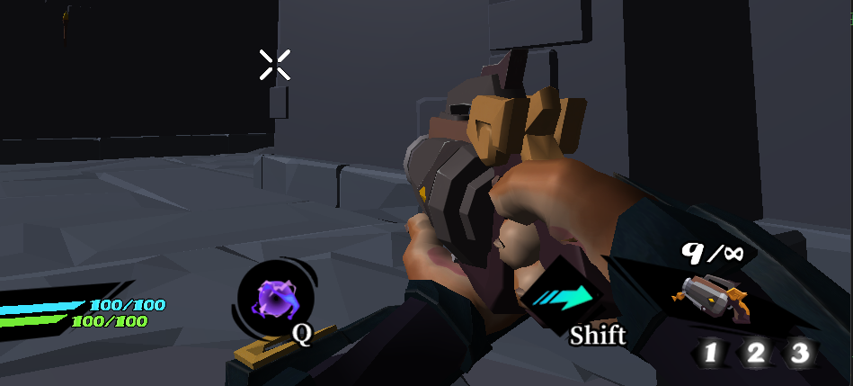
(툰 쉐이딩 적용전)
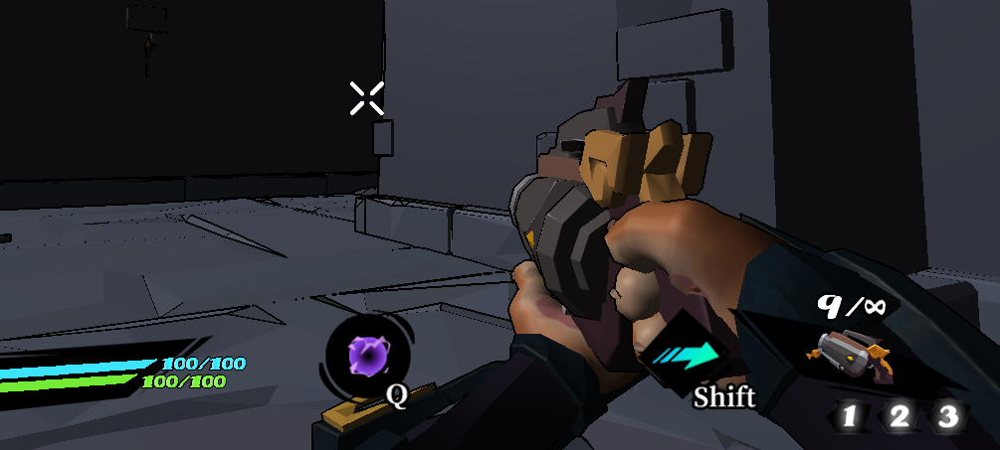
(툰 쉐이딩 적용 후)
Code
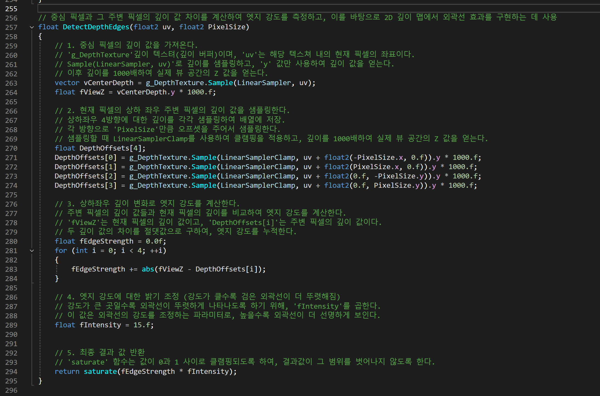
- Code
📝 Code
float DetectDepthEdges(float2 uv, float2 PixelSize)
{
// 1. 중심 픽셀의 깊이 값을 가져온다.
// 'g_DepthTexture'깊이 텍스텨(깊이 버퍼)이며, 'uv'는 해당 텍스쳐 내의 현재 픽셀의 좌표이다.
// Sample(LinearSampler, uv)'로 깊이를 샘플링하고, 'y' 값만 사용하여 깊이 값을 얻는다.
// 이후 깊이를 1000배하여 실제 뷰 공간의 Z 값을 얻는다.
vector vCenterDepth = g_DepthTexture.Sample(LinearSampler, uv);
float fViewZ = vCenterDepth.y * 1000.f;
// 2. 현재 픽셀의 상하 좌우 주변 픽셀의 깊이 값을 샘플링한다.
// 상하좌우 4방향에 대한 깊이를 각각 샘플링하여 배열에 저장.
// 각 방향으로 'PixelSize'만큼 오프셋을 주어서 샘플링한다.
// 샘플링할 때 LinearSamplerClamp를 사용하여 클램핑을 적용하고, 깊이를 1000배하여 실제 뷰 공간의 Z 값을 얻는다.
float DepthOffsets[4];
DepthOffsets[0] = g_DepthTexture.Sample(LinearSamplerClamp, uv + float2(-PixelSize.x, 0.f)).y * 1000.f;
DepthOffsets[1] = g_DepthTexture.Sample(LinearSamplerClamp, uv + float2(PixelSize.x, 0.f)).y * 1000.f;
DepthOffsets[2] = g_DepthTexture.Sample(LinearSamplerClamp, uv + float2(0.f, -PixelSize.y)).y * 1000.f;
DepthOffsets[3] = g_DepthTexture.Sample(LinearSamplerClamp, uv + float2(0.f, PixelSize.y)).y * 1000.f;
// 3. 상하좌우 깊이 변화로 엣지 강도를 계산한다.
// 주변 픽셀의 깊이 값들과 현재 픽셀의 깊이를 비교하여 엣지 강도를 계산한다.
// 'fViewZ'는 현재 픽셀의 깊이 값이고, 'DepthOffsets[i]'는 주변 픽셀의 깊이 값이다.
// 두 깊이 값의 차이를 절댓값으로 구하여, 엣지 강도를 누적한다.
float fEdgeStrength = 0.0f;
for (int i = 0; i < 4; ++i)
{
fEdgeStrength += abs(fViewZ - DepthOffsets[i]);
}
// 4. 엣지 강도에 대한 밝기 조정 (강도가 클수록 검은 외곽선이 더 뚜렷해짐)
// 강도가 큰 곳일수록 외곽선이 뚜렷하게 나타나도록 하기 위해, 'fIntensity'를 곱한다.
// 이 값은 외곽선의 강도를 조정하는 파라미터로, 높을수록 외곽선이 더 선명하게 보인다.
float fIntensity = 15.f;
// 5. 최종 결과 값 반환
// 'saturate' 함수는 값이 0과 1 사이로 클램핑되도록 하여, 결과값이 그 범위를 벗어나지 않도록 한다.
return saturate(fEdgeStrength * fIntensity);
}중심 픽셀과 주변 픽셀들의 깊이값 차이를 계산하는 코드입니다. 깊이버퍼에 기록된 깊이 값을 DepthOffsets에 담아두고 이 값을 뷰스페이스상의 Z값에 뺀 EdgeStrength값에 누적하고 saturate함수를 통해 반환하도록 하였습니다.
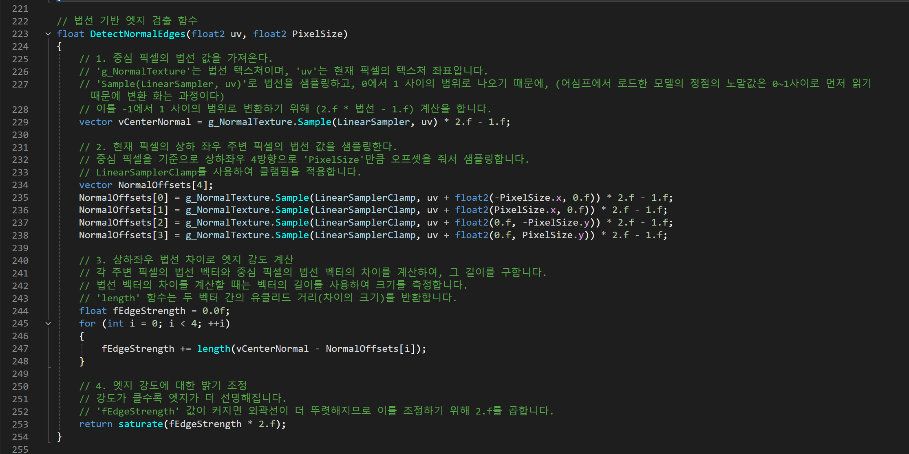
- Code
📝 Code
// 법선 기반 엣지 검출 함수
float DetectNormalEdges(float2 uv, float2 PixelSize)
{
// 1. 중심 픽셀의 법선 값을 가져온다.
// 'g_NormalTexture'는 법선 텍스처이며, 'uv'는 현재 픽셀의 텍스처 좌표입니다.
// 'Sample(LinearSampler, uv)'로 법선을 샘플링하고, 0에서 1 사이의 범위로 나오기 때문에, (어심프에서 로드한 모델의 정점의 노말값은 0~1사이로 먼저 읽기 때문에 변환 화는 과정이다)
// 이를 -1에서 1 사이의 범위로 변환하기 위해 (2.f * 법선 - 1.f) 계산을 합니다.
vector vCenterNormal = g_NormalTexture.Sample(LinearSampler, uv) * 2.f - 1.f;
// 2. 현재 픽셀의 상하 좌우 주변 픽셀의 법선 값을 샘플링한다.
// 중심 픽셀을 기준으로 상하좌우 4방향으로 'PixelSize'만큼 오프셋을 줘서 샘플링합니다.
// LinearSamplerClamp를 사용하여 클램핑을 적용합니다.
vector NormalOffsets[4];
NormalOffsets[0] = g_NormalTexture.Sample(LinearSamplerClamp, uv + float2(-PixelSize.x, 0.f)) * 2.f - 1.f;
NormalOffsets[1] = g_NormalTexture.Sample(LinearSamplerClamp, uv + float2(PixelSize.x, 0.f)) * 2.f - 1.f;
NormalOffsets[2] = g_NormalTexture.Sample(LinearSamplerClamp, uv + float2(0.f, -PixelSize.y)) * 2.f - 1.f;
NormalOffsets[3] = g_NormalTexture.Sample(LinearSamplerClamp, uv + float2(0.f, PixelSize.y)) * 2.f - 1.f;
// 3. 상하좌우 법선 차이로 엣지 강도 계산
// 각 주변 픽셀의 법선 벡터와 중심 픽셀의 법선 벡터의 차이를 계산하여, 그 길이를 구합니다.
// 법선 벡터의 차이를 계산할 때는 벡터의 길이를 사용하여 크기를 측정합니다.
// 'length' 함수는 두 벡터 간의 유클리드 거리(차이의 크기)를 반환합니다.
float fEdgeStrength = 0.0f;
for (int i = 0; i < 4; ++i)
{
fEdgeStrength += length(vCenterNormal - NormalOffsets[i]);
}
// 4. 엣지 강도에 대한 밝기 조정
// 강도가 클수록 엣지가 더 선명해집니다.
// 'fEdgeStrength' 값이 커지면 외곽선이 더 뚜렷해지므로 이를 조정하기 위해 2.f를 곱합니다.
return saturate(fEdgeStrength * 2.f);
}현재 픽셀(중심 픽셀)의 법선과 주변 픽셀의 법선의 길이 차이를 구하여 외곽선 검출을 하는데 사용된 코드입니다. 깊이 버퍼를 사용했던 것과 비슷하게 객체의 표면의 노말값을 저장하고 있는 텍스쳐로 부터 정규화를 수행한 법선 벡터의 누적합을 구하여 반환합니다.
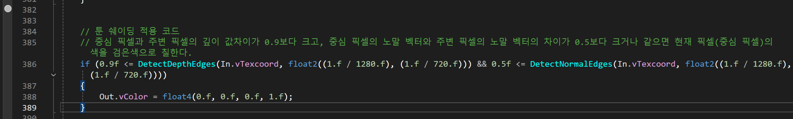
깊이 버퍼로부터 계산한 값(DetecgDepthEdges)의 값이 0.9보다 크고 계산한 노말값(DetextNormalEdges)값이 0.5보다 크다면 현재 픽셀의 깊이값의 차이가 심하고 굴곡이 심하게 져있다고 판단하여 해당픽셀의 색을 검은색으로 변환하는 코드입니다. 이를 통해 물체의 외곽선에 검은색으로 카툰 쉐이딩을 최종적으로 적용할 수 있습니다.
구현 이유
게임 내 화면을 전체적 풍을 맞추고 만화 처럼 보이게 하고싶어 구현을 하게되었습니다. 게임 내 UI를 제외한 오브젝트들은 백버퍼(실제 그려질 진짜 렌더링 타겟)에 그리기전 A라는 렌더링 타겟에 그리고 난 후 툰 쉐이딩을 통해 검은 외곽선을 표현하였습니다.
>
Glow
불을 표현하는데 사용한 효과입니다. 불을 표현할 텍스쳐와 노이즈 텍스쳐를 활용하였습니다. 시간의 흐름에 따라 노이즈 텍스쳐의 랜덤하게 UV좌표를 변화시키고 이 랜덤한 UV좌표로 부터 불 텍스쳐로부터 색을 샘플링하여 이글거리는 느낌을 주었고 가우시안 블러를 활용하여 불의 빛이 퍼질 수 있도록 하였습니다. 이때 최적화를 위해 다운 샘플링을 수행한 후 가우시안 블러를 적용하고 이를 다시 업샘플링하여 연산량을 줄일 수 있도록 구현하였습니다.
또한 어느 위치에서 바라보아도 같은 모습을 보여주기 위하여 불이 항상 카메라를 바라볼 수 있도록 빌보드 기법을 적용하였습니다.
>
구현 결과
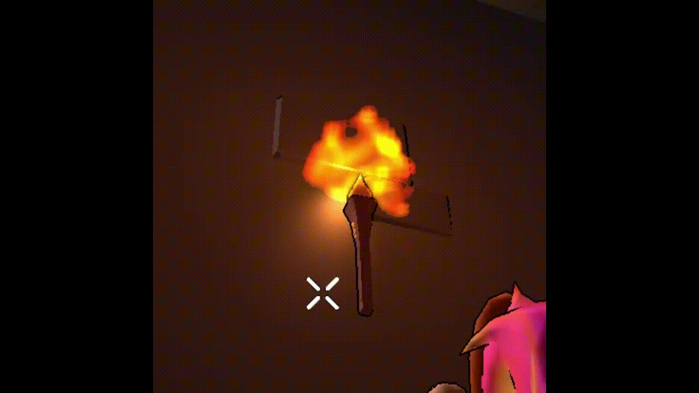
최종 결과
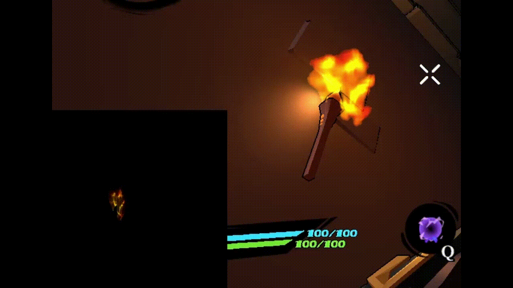
Glow 적용 결과
구현 과정
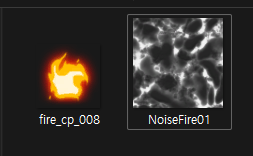
불이 이글 거리는 느낌을 주기 위해 위의 두 텍스쳐를 활용하였습니다.
시간이 지날 때마다 Noise텍스쳐의 uv값을 변화 시키고 이 변화된 uv값을 통해 fire_cp_008이라는 텍스쳐로 부터 픽셀을 샘플링하는 방법으로 불이 타오르는 느낌을 주었습니다.
>
불꽃의 픽셀이 주변 픽셀로 퍼져야 하기때문에 다운 샘플링을 하고 가우시안 블러를 X축, Y축으로 준다음 업샘플링을 하여 최종 렌더링 타겟(백버퍼)에 출력할 수 있도록 유도하였습니다.
다운 샘플링을 한 이유는 상대적으로 고해상도인 검은색 렌더링 타겟에서 낮은 해상도로 다운 샘플링하여 픽셀의 밀도를 줄여 연샨량을 줄이기 위하여 다운 샘플링을 하였습니다.
>
구현이유
횟불을 구현할 때 불의 이글 거림을 표현하고 싶어 Noise, Glow, BillBoard 기법을 통해 구현하게 되었습니다.
>
Code
- Code
📝 Code
void CTorchFire::Update(_float fTimeDelta)
{
if (IsActive())
{
// 빌보드 함수
[BillBoard();](%EA%B1%B4%ED%8C%8C%EC%9D%B4%EC%96%B4%20%EB%A6%AC%EB%B3%B8(GunFire%20Reborn)%201a14bccaf9eb80a8b33fc3434dc5dead.md)
// m_fNoiseCur : 현재 노이즈 변화값
// DeltaTime을 m_bReverse 여부에 따라 값을 누적하거나 감쇠합니다.
// m_fNoiseCur가 m_fNoiseMax보다 크다면 m_bReverse를 반전시킵니다.
if (!m_bReverse)
m_fNoiseCur += fTimeDelta;
else
m_fNoiseCur -= fTimeDelta;
if (m_fNoiseCur > m_fNoiseMax)
m_bReverse == false ? m_bReverse = true : m_bReverse = false;
}
}
PS_OUT PS_MAIN_EFFECT_TORCH(PS_IN In)
{
PS_OUT Out = (PS_OUT) 0;
// 기본 텍스쳐 값 샘플링
Out.vColor = g_Texture.Sample(LinearSampler, In.vTexcoord);
// 알파 값이 0.1이하라면 해당 픽셀은 폐기한다.
if (Out.vColor.a < 0.1f)
discard;
float speedX = 0.5f;
float speedY = 0.7f;
float distortionStrength = 0.05f;
// 노이즈 텍스처 샘플링
float2 noiseUV = In.vTexcoord + float2(g_fNoiseCurTime * speedX, g_fNoiseCurTime * speedY);
float2 noiseValue = g_TextureNoise.Sample(LinearSampler, noiseUV).rg;
// UV 왜곡 적용 (왜곡된 UV를 계산한다.)
float2 distortedUV = In.vTexcoord + (noiseValue - 0.5f) * distortionStrength;
// 왜곡된 UV로 부터 색을 샘플링 해온다.
Out.vColor = g_Texture.Sample(LinearSampler, distortedUV);
// 알파 값을 노이즈 값에 따라 조절하여 불꽃의 일부 영역이 자연스럽게 사라지함.
Out.vColor.a *= noiseValue.r;
// lerp 함수는 선형 보간 함수로 lerp(a, b, t), t값에 따라 a에서 b로 서서히 변화하는 값을 반환 하게 하여 주황색에서 노란색으로 서서히 변하게 해주었습니다.
float3 gradient = lerp(float3(1.0, 0.5, 0.0), float3(1.0, 1.0, 0.0), noiseValue.r);
Out.vColor.rgb *= gradient;
return Out;
}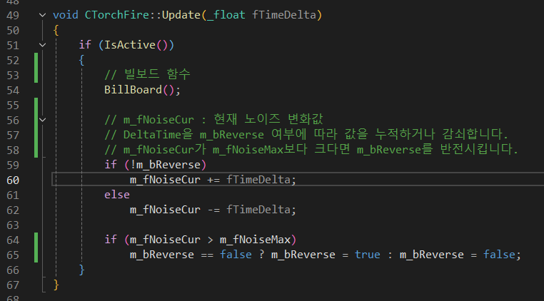
매틱 외곡할 시간을 업데이트 하는 함수입니다. 지정한 시간동안 외곡시간을 누적하여 Noise텍스쳐의 UV를 랜덤하게 변화하고 최대외곡시간을 벗어난경우 외곡을 멈추도록 하였습니다.
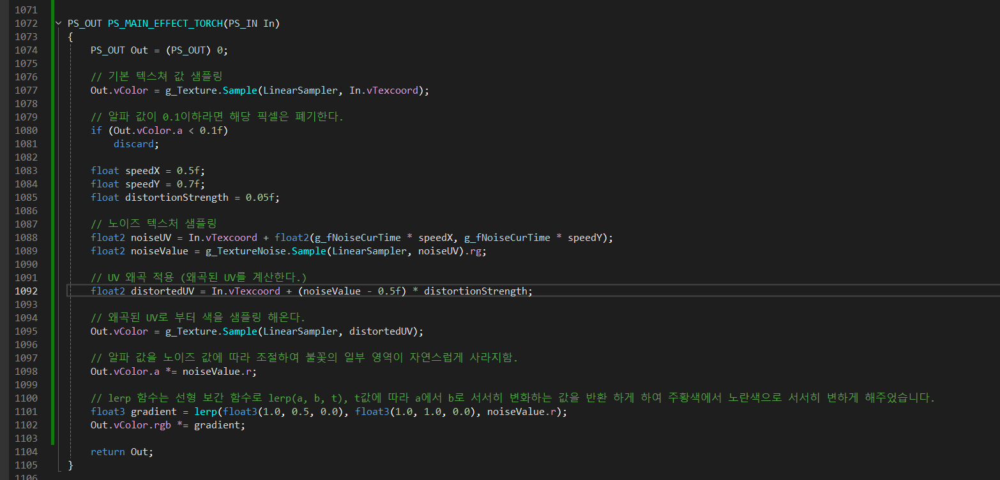
누적한 외곡 시간에 따라 노이즈 텍스쳐의 UV를 왜곡하고 왜곡한 UV 좌표로 fire 텍스쳐에서 값을 샘플링하는 HLSL코드입니다.
UV좌표를 외곡시간에 따라 샘플링하여 샘플링한 픽셀의 색을 횟불에 적용하였습니다.
- Code
📝 Code
// 1. 먼저 횟불(및 이펙트)을 그린다 의 과정
PS_OUT PS_MAIN_GLOW(PS_IN In)
{
PS_OUT Out = (PS_OUT) 0;
Out.vColor = g_Texture.Sample(LinearSampler, In.vTexcoord);
if (Out.vColor.a < 0.1f)
discard;
return Out;
}
// 2. 다운 샘플링
HRESULT CRenderer::RenderGlowCopy()
{
_uint iNumViewPorts = 1;
D3D11_VIEWPORT ViewPortDesc = {};
m_pContext->RSGetViewports(&iNumViewPorts, &ViewPortDesc);
SetUpViewPort(ViewPortDesc.Width / 2, ViewPortDesc.Height / 2);
if (FAILED(m_pGameInst->BeginMRT(TEXT("MRTGlowCopy"), m_pGlowDepthStencilView)))
return E_FAIL;
if (FAILED(m_pGameInst->BindRTShaderResource(m_pShader, "g_TargetGlow", TEXT("TargetGlow"))))
return E_FAIL;
m_pShader->Begin(8);
m_pVIBuffer->BindBufferDesc();
m_pVIBuffer->Render();
if (FAILED(m_pGameInst->EndMRT()))
return E_FAIL;
SetUpViewPort(ViewPortDesc.Width, ViewPortDesc.Height);
return S_OK;
}
// - 다운 샘플링한 픽셀을 그대로 반환 합니다.
PS_OUT PS_MAIN_GLOW_COPY(PS_IN In)
{
PS_OUT Out = (PS_OUT) 0;
Out.vColor = g_TargetGlow.Sample(LinearSampler, In.vTexcoord);
if (Out.vColor.a < 0.1f)
discard;
return Out;
}
// 3. 가우시안 블러 X 축
// 샘플링 오프셋:
//블러는 중심 픽셀 주변의 여러 픽셀을 샘플링하고, 이 값을 가중치(weight)를 곱하여 평균을 내는 방식으로 이루어집니다.
//X축 블러는 텍스처의 좌우 방향으로 여러 픽셀을 샘플링합니다.
//가우시안 분포:
// - 가우시안 분포 기반의 커널을 사용하여 가중치를 계산합니다. 중심에 가까울수록 높은 가중치를 부여하고, 멀어질수록 낮은 가중치를 부여합니다.
//결과 합산:
// - 샘플링된 값에 가중치를 곱하고 합산한 뒤, 총 가중치로 나누어 평균 값을 계산
PS_OUT PS_MAIN_GLOW_COPY_BLUR_X(PS_IN In)
{
PS_OUT Out;
// 가우시안 커널 (5 샘플, 가중치)
float weights[5] = { 0.06136f, 0.24477f, 0.38774f, 0.24477f, 0.06136f }; // 가우시안 분포
// 텍셀 크기 (X축 방향으로 1픽셀 크기 계산)
float2 texelSize = float2(1.0f / (1280.f * 0.5f), 0.0f);
// 초기화
Out.vColor = float4(0, 0, 0, 0);
// X축 블러: -2, -1, 0, +1, +2 위치 샘플링
for (int i = -2; i <= 2; ++i)
{
// 텍스처 좌표 계산 (X축 이동)
float2 sampleCoord = In.vTexcoord + float2(float(i), 0) * texelSize;
// 텍스처 샘플링
float4 sampledColor = g_TargetGlowCopy.Sample(LinearSampler, sampleCoord);
// 가중치 곱하여 누적
// abs(i) 대칭 가중치 사용 2 1 0 1 2
Out.vColor += sampledColor * weights[abs(i)];
}
// 알파 값이 너무 낮으면 픽셀 폐기
if (Out.vColor.a < 0.1f)
discard;
return Out;
}
// 4. 가우시안 블러 Y축
PS_OUT PS_MAIN_GLOW_COPY_BLUR_Y(PS_IN In)
{
PS_OUT Out;
// 가우시안 커널 (5 샘플, 가중치)
float weights[5] = { 0.06136f, 0.24477f, 0.38774f, 0.24477f, 0.06136f }; // 가우시안 분포
// 텍셀 크기 (Y축 방향으로 1픽셀 크기 계산)
float2 texelSize = float2(0.0f, 1.0f / (720.f * 0.5f)); // Y축 크기 설정 (다운샘플링된 높이 기준)
// 초기화
Out.vColor = float4(0, 0, 0, 0);
// X축 블러: -2, -1, 0, +1, +2 위치 샘플링
for (int i = -2; i <= 2; ++i)
{
// 텍스처 좌표 계산 (X축 이동)
float2 sampleCoord = In.vTexcoord + float2(0.f, float(i)) * texelSize;
// 텍스처 샘플링
float4 sampledColor = g_TargetGlowCopyBlurX.Sample(LinearSampler, sampleCoord);
// 가중치 곱하여 누적
// abs(i) 대칭 가중치 사용 2 1 0 1 2
Out.vColor += sampledColor * weights[abs(i)];
}
// 알파 값이 너무 낮으면 픽셀 폐기
if (Out.vColor.a < 0.1f)
discard;
return Out;
}
// 5. 업샘플링 과 최종 합성
// 최종 합성
// PS_MAIN_GLOW_FINAL
PS_OUT PS_MAIN_GLOW_FINAL(PS_IN In)
{
PS_OUT Out;
Out.vColor = g_TargetGlowCopyBlurY.Sample(LinearSampler, In.vTexcoord);
// 알파 값이 너무 낮으면 픽셀 폐기
if (Out.vColor.a < 0.1f)
discard;
return Out;
}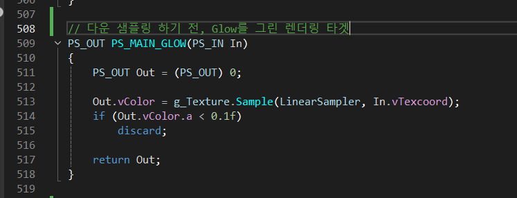
횟불(및 이펙트)을 그린 쉐이딩 단계에 해당하는 코드입니다.
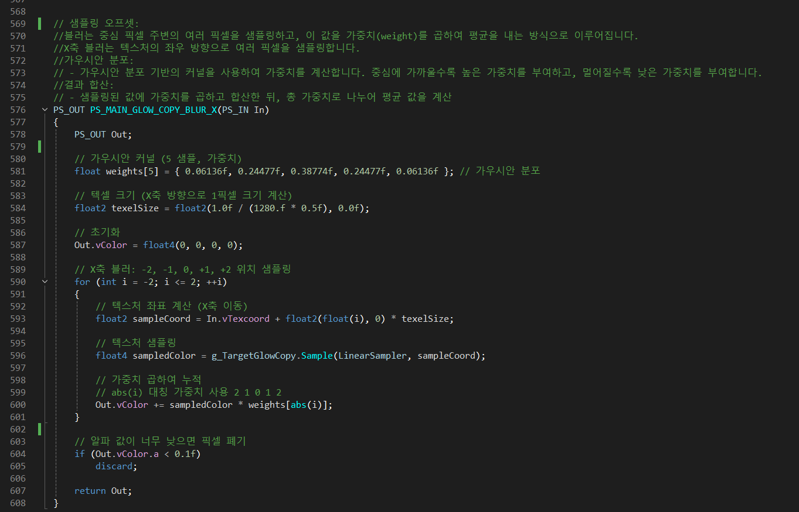
다운 샘플링을 한 렌더링 타겟에서 가우시안 블러 X축 적용하는 코드입니다.
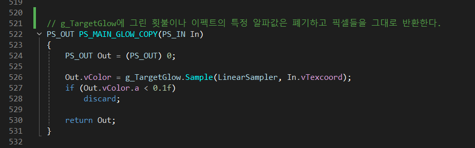
다운 샘플링한 후 값을 그대로 반환하는 코드입니다.
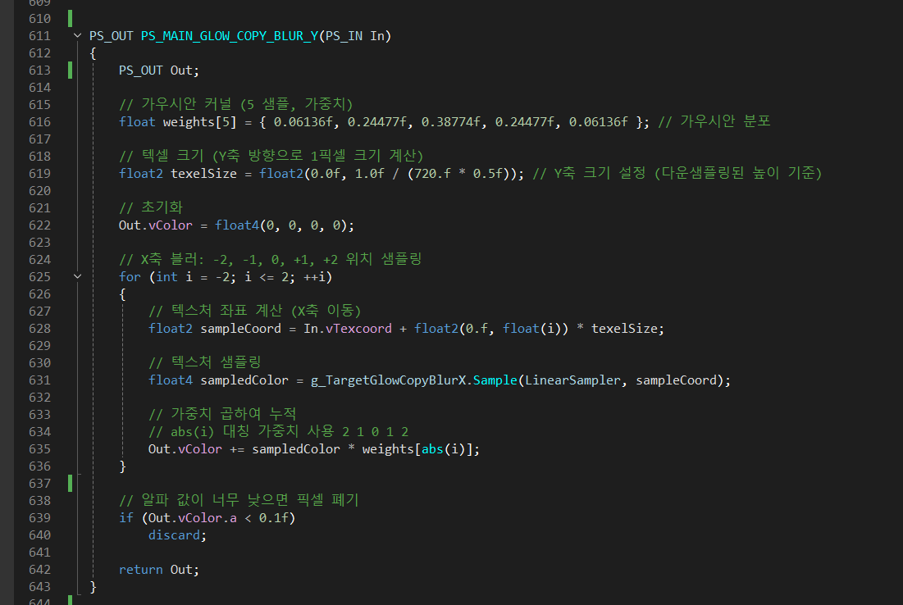
다운 샘플링을 한 상태에서의 가우시안 블러 Y축 적용한 코드입니다.
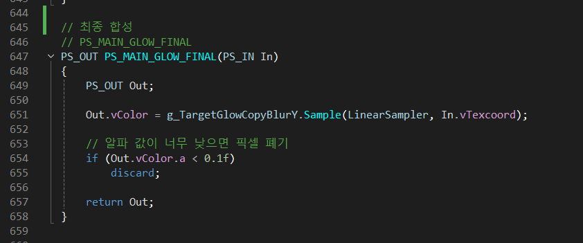
업샘플링을 하고 최종 합성하는 코드입니다. 최종 업샘플링을 통해 횟불의 불이 번지는 듯한 효과를 연출 할 수 있었습니다.
Rim Light
3D 오브젝트 렌더링 시, 기본 명암 연산용 렌더 타겟 외에도 외곽선 검출 전용 렌더 타겟(TargetOuter)에 오브젝트를 초록색으로 한 번 더 렌더링하고, 해당 렌더 타겟의 ClearColor를 검은색으로 설정하여 대비를 높였습니다. 이후 후처리 단계에서 소벨 필터(Sobel Filter)를 적용하여 초록색 윤곽선에서 경계가 감지되는 영역만 빨간색으로 추출함으로써, 외곽선만 강조된 이미지를 생성하는 후처리 기반 외곽선 검출 기법을 구현하였습니다.
>
구현 결과

좌하단(최종 렌더타겟에 적용할 빨간 외곽선 렌더링 타겟, 디버그용), 중앙하단
(그릴 객체를 초록색으로 그려주는 용도의 렌더링 타겟, 추후 소벨필터를 적용하여 빨간 외곽선 검출)
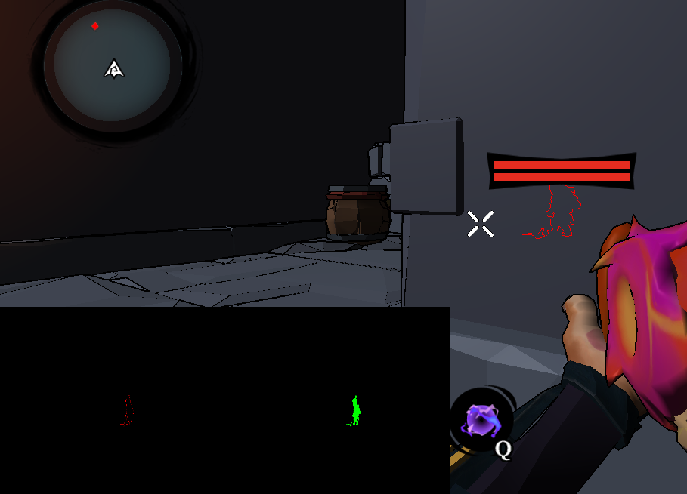
적의 위치를 쉽게 판별할 수 있도록 벽뒤에 있어도 적의 위치가 보일 수 있다는 것을 테스트한 화면입니다.
구현 과정
우선 3D 오브젝트를 그릴 때 기본 명암 연산용 렌더링 타겟에도 3D 오브젝트를 그리고, TargetOuter라는 렌더링 타겟에도 한번 더 그려주는 방식을 선택했습니다.
(이 TargetOuter라는 렌더링 타겟의 ClearColor색상은 검은색으로 설정했습니다.)
따라서 몬스터(및 제가 직접 지정한 3D오브젝트)들을 그릴 때 TargetOuter라는 렌더링 타겟에 초록색으로 한번 더 그리고 이 TargetOuter라는 렌더링 타겟을 후처리 과정에서
‘소벨 필터’라는 것을 적용하여 초록색에서 외곽선에 해당하는 부분만 빨간색으로 필터링 하여 남겨둘 수 있도록 하였습니다.
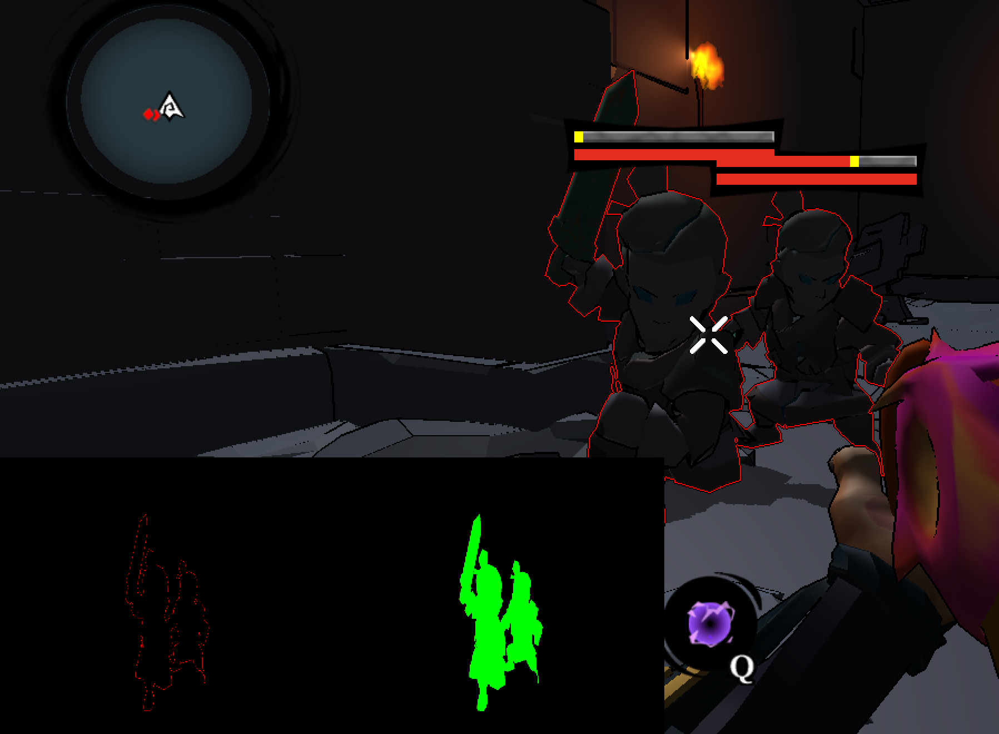
먼저 초록색으로 그린 렌더링 타겟을 가져와 소벨 빌터를 적용하여 좌하단의 빨간 외곽선만 남기고 최종적으로 인게임에 보여질 백버퍼 화면에 빨간 외곽선을 적용한 모습입니다.
구현 이유
빨간 외곽선을 만들고 싶었지만 좌하단 이미 처럼 모든 외곽선엔 빨간 선을 칠하기 싫었고 우하단 이미지처럼 딱 겉 부분만에 대해서 빨간 외곽선을 만들고 싶었습니다.
림 라이트를 그대로 적용하면 오른쪽 이미지 처럼 원하는 외곽선이 나오지 않았기 때문에 약간의 수정을 하여 완전 겉 테두리에만 외곽선을 구현하였습니다.
>
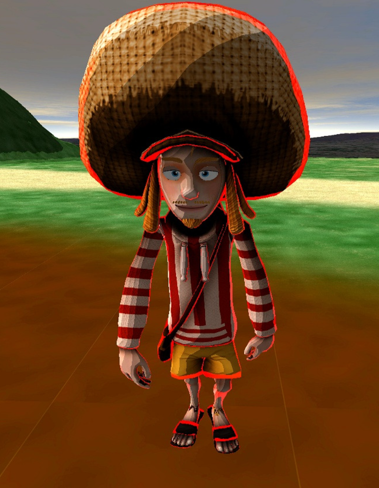
모든 외곽선에 적용(본인이 원하지 않는 구현 결과)
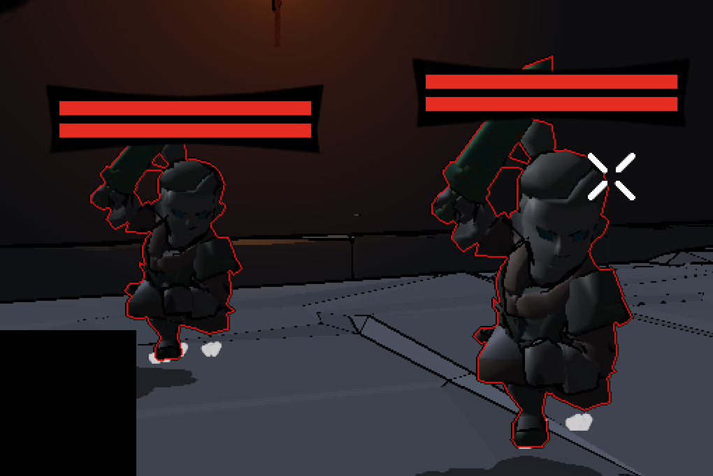
본인이 구현하길 원하는 결과 외곽선 (완전 겉 테두리만 적용)
Code
- Code
📝 Code
// 1. 아래 PS_MAIN_OUTER_PRE는 초록색으로 먼저 칠하기 위한 과정입니다.
struct PS_OUT_OUTER_PRE
{
float4 vDiffuse : SV_TARGET0;
float4 vNormal : SV_TARGET1;
float4 vDepth : SV_TARGET2;
float4 vWorld : SV_TARGET3;
float4 vOuterPre : SV_TARGET4; // 빨간색 외곽선 RTV
};
// 크기 1인 상태 초록색으로 칠한다.
PS_OUT_OUTER_PRE PS_MAIN_OUTER_PRE(PS_IN In)
{
PS_OUT_OUTER_PRE Out = (PS_OUT_OUTER_PRE) 0;
vector vMtrlDiffuse = g_DiffuseTexture.Sample(LinearSampler, In.vTexcoord);
if (vMtrlDiffuse.a < 0.1f)
discard;
Out.vDiffuse = vMtrlDiffuse;
Out.vNormal = float4(In.vNormal.xyz * 0.5f + 0.5f, 0.f);
Out.vDepth = float4(In.vProjPos.z / In.vProjPos.w, In.vProjPos.w / 1000.f, 0.f, 0.f);
Out.vWorld = In.vWorldPos;
Out.vOuterPre = float4(0.f, 1.f, 0.f, 1.f); // 빨간 외곽선을 그리기 전 초록색으로 칠하기 위한 작업 SV_TARGET4에 초록색으로 칠한다.
return Out;
}
// 2. 소벨 필터로 외곽선을 빨갛게 칠하고 나머지 부분은 discard를 해버리는 코드
struct PS_OUT_OUTER
{
float4 vColor : SV_TARGET0;
};
PS_OUT_OUTER PS_MAIN_OUTER(PS_IN In)
{
PS_OUT_OUTER Out = (PS_OUT_OUTER) 0;
float4 vOuterPreColor = g_OuterPreTexture.Sample(LinearSampler, In.vTexcoord); // 초록색
// 해상도 기반 UV 오프셋 (1280x720 예시)
float2 UVOffset = float2(1.0f / 1280.0f, 1.0f / 720.0f);
// Sobel 필터로 경계 검출
float4 left = g_OuterPreTexture.Sample(LinearSampler, In.vTexcoord - float2(UVOffset.x, 0.0f));
float4 right = g_OuterPreTexture.Sample(LinearSampler, In.vTexcoord + float2(UVOffset.x, 0.0f));
float4 up = g_OuterPreTexture.Sample(LinearSampler, In.vTexcoord - float2(0.0f, UVOffset.y));
float4 down = g_OuterPreTexture.Sample(LinearSampler, In.vTexcoord + float2(0.0f, UVOffset.y));
// Sobel 연산 계산 (경계 강도)
float gx = abs(right.g - left.g); // X축 차이
float gy = abs(down.g - up.g); // Y축 차이
float edgeStrength = sqrt(gx * gx + gy * gy); // 경계 강도 계산
// 경계선 기준 값 설정
float edgeThreshold = 0.1f; // 경계선 강도 기준
// 검은색(배경)과 초록색(몬스터) 간 경계를 계산
bool isBackground = (vOuterPreColor.r + vOuterPreColor.g + vOuterPreColor.b) < 0.1f;
bool isGreen = vOuterPreColor.g > 0.9f && vOuterPreColor.r < 0.5f && vOuterPreColor.b < 0.5f;
// 경계선 픽셀 결정
if (isGreen)
{
if (edgeStrength > edgeThreshold)
{
Out.vColor = float4(1.0f, 0.0f, 0.0f, 1.0f); // 경계선은 빨간색
}
else
{
Out.vColor = float4(0.0f, 0.0f, 0.0f, 1.0f); // 경계가 아닌 초록색 내부는 검은색
// Out.vColor = blurredColor; // 경계가 아닌 초록색 내부는 Blur 적용
}
}
else
{
discard; // 배경은 그대로 검은색 유지
}
return Out;
}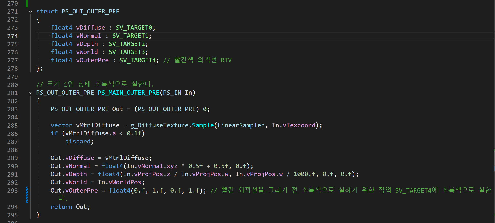
293줄 Out.vOuterPre : 빨간 외곽선을 검출하기 위해 렌더링 타겟에 초록색으로 그려주는 HLSL코드입니다.
검은색 렌더링 타겟에 객체를 자주사용하지 않는 초록색으로 그려주도록 하였습니다.
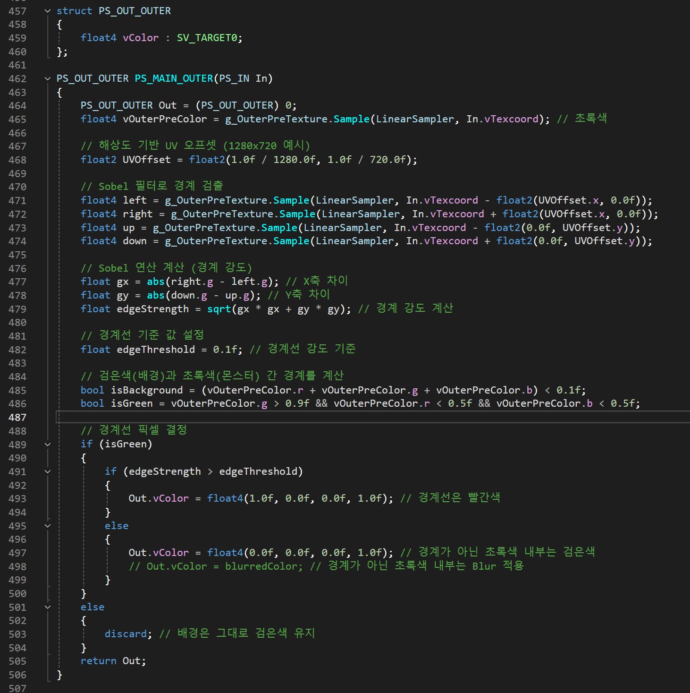
앞선 단계에서 초록색으로 그린 렌더링 타겟을 가지고오고 초록색에 해당하는 부분을 소벨필터를 통해 필터링 해서 검은색 픽셀과 초록색 픽셀이 만나는 지점에 대해서만 빨간 필섹을 넣어 최종적으로 빨간 외곽선을 표현하였습니다.
Dissolve
쉐이더에 노이즈 텍스를 바인딩한 뒤 노이즈 텍스쳐의 Alpha값과 사용자가 설정한 시간의 비율을 계산하고 계산한 비율보다 작은 알파값은 discard를 통해 해당 픽셀을 폐기하여 타들어가는 듯한 효과를 주어 자연스럽게 보스몬스터가 사라질 수 있도록 기능을 구현하였습니다.
>
구현 결과
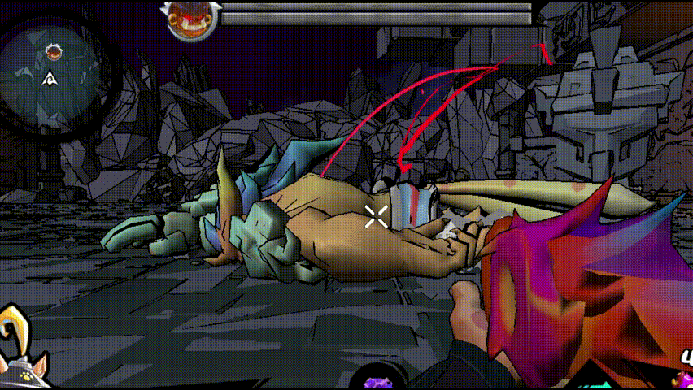
구현 과정
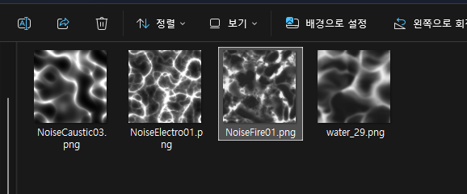
사용한 리소스는 NoiseFire01.png라는 리소스를 사용하여 디졸브 효과를 구현하였습니다.
보스 몬스터가 죽고 완전히 쓰러지고 난 뒤 쉐이더에 노이즈 텍스쳐를 바인딩하고 디졸브 이펙트가 끝나는 시간까지 비율을 계산하여 현재 비율보다 노이즈 텍스쳐로 부터 샘플링한 값의 RGB중 R값이 더 작다면 해당 픽셀을 폐기(보여주지 않음)하는 방식으로 Dissolve 효과를 구현하였습니다.
>
구현 이유
보스 몬스터가 죽을 때 죽어서 없어진다는 느낌을 강하게 주고 싶어 구현한 쉐이더 기법입니다.
Code
- Code
📝 Code
float g_NoiseStrength = 0.3f;
float g_BurnGlowIntensity = 0.4f;
PS_OUT PS_MAIN_BOSS(PS_IN In)
{
PS_OUT Out = (PS_OUT) 0;
// 보스 디퓨즈 색상 샘플링
vector vMtrlDiffuse = g_DiffuseTexture.Sample(LinearSampler, In.vTexcoord);
// 알파값이 0.1이라하면 discard (폐기)
if (vMtrlDiffuse.a < 0.1f)
discard;
// 그대로 대입한다.
Out.vDiffuse = vMtrlDiffuse;
// 디졸브 시작한 경우
if (g_NoiseStart)
{
// fRatio : 0 (시작) -> 1 (완료) 사이의 진행 비율
float fRatio = (g_NoiseCurTime / g_NoiseMaxTime);
// 노이즈 텍스처에서 값을 샘플링
vector vNoise = g_NoiseTexture.Sample(LinearSampler, In.vTexcoord);
// UV 왜곡 계산: RGB 채널 중 R, G 값을 사용하여 UV 좌표를 왜곡
float2 UVDistortion = (vNoise.rg - 0.5f) * g_NoiseStrength * fRatio;
float2 DistortedUV = clamp(In.vTexcoord + UVDistortion, 0.f, 1.f);
// 왜곡된 UV로 다시 노이즈 샘플링
vector vDistoredNoise = g_NoiseTexture.Sample(LinearSampler, DistortedUV);
// BurnAlpha는 디졸브 마스크 역할을 함
float BurnAlpha = vDistoredNoise.r;
// 디졸브 진행중인 픽셀 제거
if (BurnAlpha < fRatio)
{
discard;
}
// 타오르는 경계 영역을 생성 (0.02의 여유를 줘서 Glow 효과를 부여)
// BurnAlpha가 디졸브할 비율을 말한다.
// 빨갛게 타오르는 듯한 부분의 영역을 넓히기 위해서 +- 0.02
else if (BurnAlpha >= fRatio - 0.02f && BurnAlpha <= fRatio + 0.02f)
{
// 빨간 영역: 빛나는 효과 추가
// GlowFactor를 사용하여 매끄러운 효과를 부여
float GlowFactor = smoothstep(fRatio - 0.02f, fRatio + 0.02f, BurnAlpha);
Out.vDiffuse.r = 1.0f + GlowFactor * 2.0f; // 빨강 색상 강조
Out.vDiffuse.g = Out.vDiffuse.r * 0.2f; // 약간의 주황색 톤 추가
Out.vDiffuse.b = Out.vDiffuse.r * 0.1f;
// 발광 효과 강조 (강한 Glow)
Out.vDiffuse.rgb *= GlowFactor * g_BurnGlowIntensity;
return Out;
}
// 경계보다 조금 더 넓은 영역에서 부드러운 Glow 효과 적용
float GlowFactor = smoothstep(fRatio - 0.05f, fRatio + 0.05f, BurnAlpha);
// 기본 색상에 GlowFactor를 추가하여 빛나는 효과 부여
Out.vDiffuse.rgb += GlowFactor * g_BurnGlowIntensity;
// 전체적으로 Dissolve 비율에 따라 점점 사라지도록 함
Out.vDiffuse.rgb *= lerp(1.f, 0.f, fRatio);
}
Out.vNormal = float4(In.vNormal.xyz * 0.5f + 0.5f, 0.f);
Out.vDepth = float4(In.vProjPos.z / In.vProjPos.w, In.vProjPos.w / 1000.f, 0.f, 0.f);
Out.vWorld = In.vWorldPos;
return Out;
}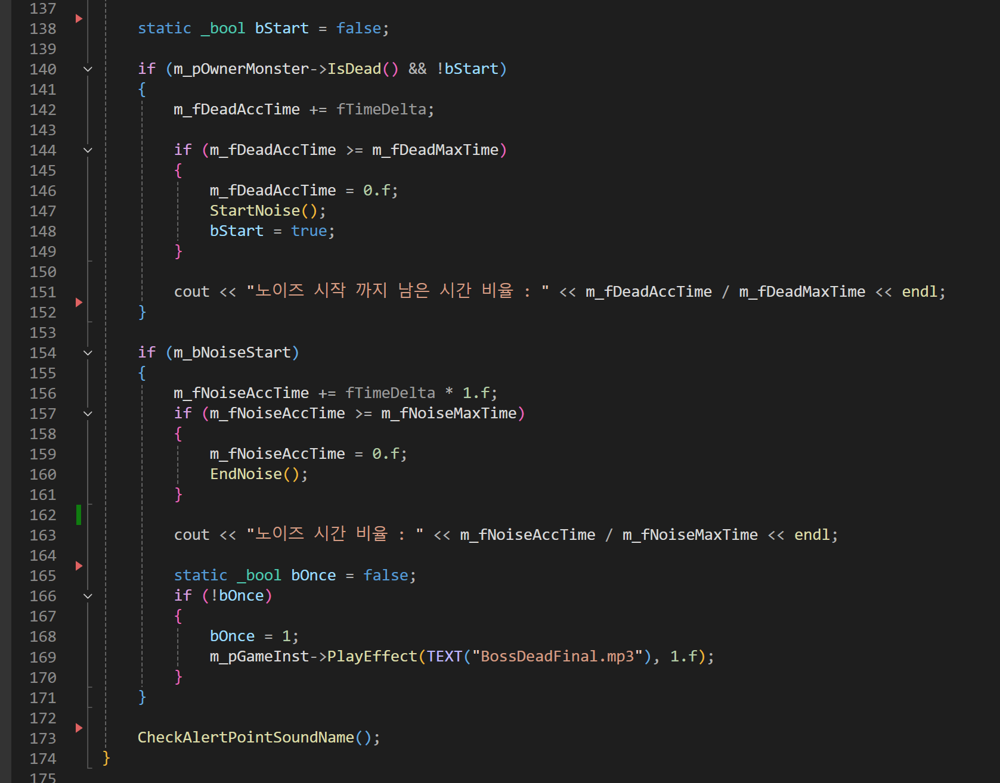
보스가 죽게 되면 쓰러질때까지의 시간 계산 및 Dissolve 시간을 매틱 계산하는 코드입니다.
보스가 쓰러지는 타이밍을 애니매이션의 키프레임에 삽입하고 이벤트가 발생하면 위의 함수를 호출하여 쓰러지는 시간을 누적하여 계산할 수 있도록 하였습니다.
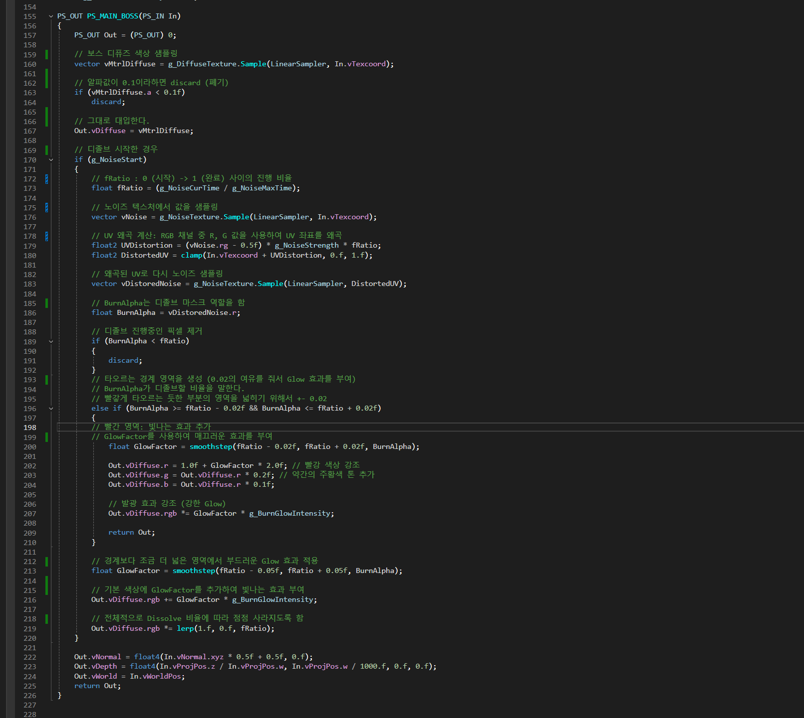
실제 Dissolve를 적용해주는 HLSL 코드입니다.
바인딩한 노이즈 텍스쳐를 가지고 오고 노이즈 텍스쳐로부터 샘플링한 픽셀의 r값을 통해 이 r값을 이전단계의 누적한 시간 보다 작은 픽셀은 폐기하는 로직을 구현하여 부분적으로 타들어가는 듯한 효과를 연출하였습니다.
BillBoard
BillBoard
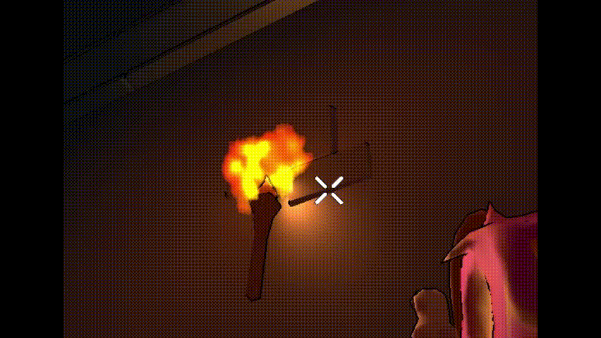
카메라의 현재 위치(A)를 가져오고 [A위치 - ‘횟불의 위치’]를 빼 방향벡터(B, 횟불의 Look벡터)를 구한다음 이 B라는 벡터를 정규화합니다.
이후 임의의 벡터 축(0, 1, 0)이라는 벡터와 B벡터를 외적하여 횟불의 Right벡터를 만들어주고 이 Right벡터와 Look벡터를 다시 외적하여 횟불의 Up벡터를 만들고 이 Right, Up, Look 벡터를 횟불의 Right, Up, Look으로 설정하여 항상 카메라를 향하도록 유도하였습니다.
>
- Code
📝 Code
void CEffect::BillBoard()
{
_float4* pCamPos = const_cast<_float4*>(m_pGameInst->GetCameraPosition());
_vector vCamPos = XMLoadFloat4(pCamPos);
_vector vLook = XMVector3Normalize(vCamPos - m_pTransformCom->GetTransformState(CTransform::STATE_POS));
_vector vRight = XMVector3Normalize(XMVector3Cross(_vector{ 0.f, 1.f, 0.f }, vLook));
_vector vUp = XMVector3Normalize(XMVector3Cross(vLook, vRight));
m_pTransformCom->SetTransformState(CTransform::STATE_RIGHT, vRight);
m_pTransformCom->SetTransformState(CTransform::STATE_UP, vUp);
m_pTransformCom->SetTransformState(CTransform::STATE_LOOK, vLook);
}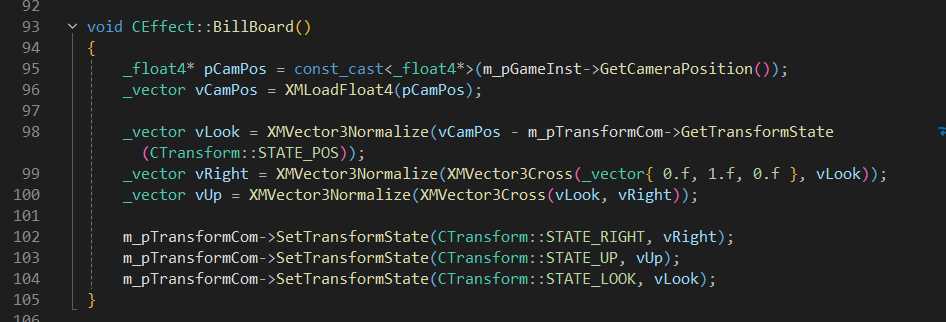
카메라의 위치를 가져오고 ‘현재 카메라의 월드 위치 - 오브젝트(횟불)의 위치’를 통해 카메라를 향하는 방향벡터 (vLook)을 만들고 정규화 합니다. vLook벡터를 수직인 벡터와 외적을 하여 Right벡터를 만들고 Right벡터와 Look벡터를 다시 외적하여 Up벡터를 만들어줍니다.
이렇게 만든 Right, Up, Look벡터를 횟불 오브젝트의 월드 변환 행렬의 0행에는 Right벡터를 넣고(SetTransformState(CTransform::STATE_RIGHT), 1행에는 Up벡터를 2행에는 Look벡터를 넣어 SR에 해당하는 상태값을 설정해줍니다.
이때 Transform(이동)에 대한 부분은 건드리면 안된다는 점을 숙지하고 빌보드 기법을 적용하였습니다.
이렇게 하여 항상 카메라를 바라볼 수 있도록 구현하였습니다.
Effect
Trail Effect
칼을 휘두르는 등의 모션에서 트레일 효과를 deque를 통해 구현하였습니다. 칼의 끝점에 트레일 위치를 생성하기 위한 추적용 오브젝트를 만들고 해당 오브젝트의 월드 공간상의 위치를 계산하여 정점을 찍은뒤 deque에 push_front를 통해 새로운 정점을 추가하고 오래된 정점들은 pop_back을 통해 트레일 효과를 구현하였습니다.
>
구현결과
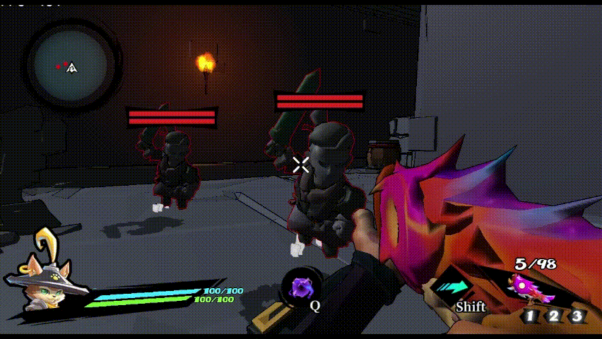
몬스터1 칼 휘두를 때
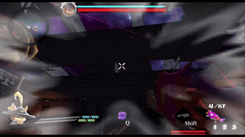
보스 몬스터 눈에서 나오는 빨간 트레일
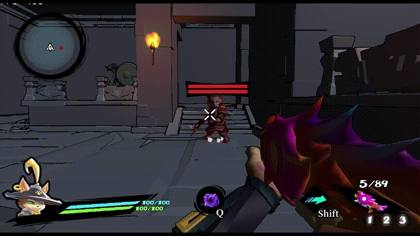
몬스터3 창을 휘두를 때
구현 과정
트레일 이펙트에 사용되는 정점을 새롭게 정의하여 사용하였습니다. VTX_POSTEX_TIME이라는 이름으로 정점을 정의하고 ‘위치, UV, 시간’ 를 정점의 구성 요소로 넣었습니다.
정점이 생성될 위치를 알기 위해 몬스터 칼의 끝점(칼의 소켓 위치)의 위치를 가지고 와 매틱 해당 위치에 정점을 추가해 나가고 시간이 오래된 정점을 없애는 식으로 구현을 하였습니다.
먼저 생성된 것은 없애고 새로 생성된 것은 일정 시간이 지나고 나서 제거해야 했기에 정점을 관리한 컨테이너로 deque를 사용하였습니다. (먼저 생성된 정점은 pop_back로 제거하고 새로 생성된 정점은 push_front을 하였습니다.)
구현 이유
게임 내에 칼을 휘두르는 몬스터의 애니매이션이 많았고 이때 적절한 이펙트를 주고 싶어 트레일 이펙트라는 개념을 알게 되어 구현하게 되었습니다.
>
이렇게 구현한 이유
트레일 이펙트를 구현할 때 시간의 흐름에 따라 정점을 앞으로 추가하거나 뒤로 없애는 등의 작업이 필요 때문에 std::deque라는 컨테이너를 사용하게 되었습니다.
또한 로컬 상의 정점의 Y축의 로컬 상의 위치를 -0.5f, 0.5f로 잡은 이유는 스스로 이해하기도 편하고 직관성이 그나마 있는 편이라 생각하여 이러한 위치로 초기 정점의 위치를 설정하게 되었습니다.
>
Code
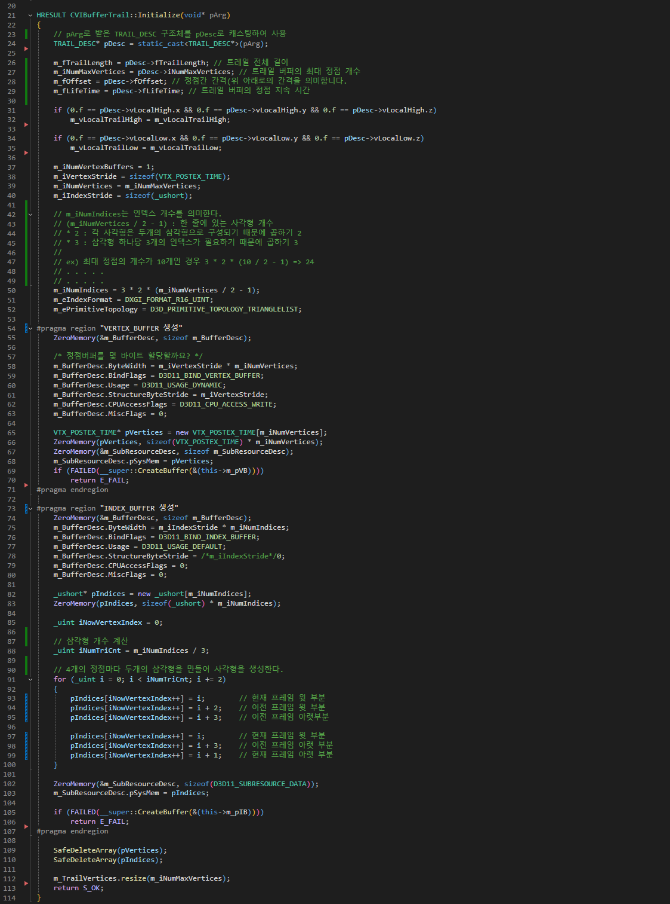
- Code
📝 Code
HRESULT CVIBufferTrail::Initialize(void* pArg)
{
// pArg로 받은 TRAIL_DESC 구조체를 pDesc로 캐스팅하여 사용
TRAIL_DESC* pDesc = static_cast<TRAIL_DESC*>(pArg);
m_fTrailLength = pDesc->fTrailLength; // 트레일 전체 길이
m_iNumMaxVertices = pDesc->iNumMaxVertices; // 트래일 버퍼의 최대 정점 개수
m_fOffset = pDesc->fOffset; // 정점간 간격(위 아래로의 간격을 의미합니다.
m_fLifeTime = pDesc->fLifeTime; // 트레일 버퍼의 정점 지속 시간
if (0.f == pDesc->vLocalHigh.x && 0.f == pDesc->vLocalHigh.y && 0.f == pDesc->vLocalHigh.z)
m_vLocalTrailHigh = m_vLocalTrailHigh;
if (0.f == pDesc->vLocalLow.x && 0.f == pDesc->vLocalLow.y && 0.f == pDesc->vLocalLow.z)
m_vLocalTrailLow = m_vLocalTrailLow;
m_iNumVertexBuffers = 1;
m_iVertexStride = sizeof(VTX_POSTEX_TIME);
m_iNumVertices = m_iNumMaxVertices;
m_iIndexStride = sizeof(_ushort);
// m_iNumIndices는 인덱스 개수를 의미한다.
// (m_iNumVertices / 2 - 1) : 한 줄에 있는 사각형 개수
// * 2 : 각 사각형은 두개의 삼각형으로 구성되기 때문에 곱하기 2
// * 3 : 삼각형 하나당 3개의 인덱스가 필요하기 때문에 곱하기 3
//
// ex) 최대 정점의 개수가 10개인 경우 3 * 2 * (10 / 2 - 1) => 24
// . . . . .
// . . . . .
m_iNumIndices = 3 * 2 * (m_iNumVertices / 2 - 1);
m_eIndexFormat = DXGI_FORMAT_R16_UINT;
m_ePrimitiveTopology = D3D_PRIMITIVE_TOPOLOGY_TRIANGLELIST;
#pragma region "VERTEX_BUFFER 생성"
ZeroMemory(&m_BufferDesc, sizeof m_BufferDesc);
/* 정점버퍼를 몇 바이트 할당할까요? */
m_BufferDesc.ByteWidth = m_iVertexStride * m_iNumVertices;
m_BufferDesc.BindFlags = D3D11_BIND_VERTEX_BUFFER;
m_BufferDesc.Usage = D3D11_USAGE_DYNAMIC;
m_BufferDesc.StructureByteStride = m_iVertexStride;
m_BufferDesc.CPUAccessFlags = D3D11_CPU_ACCESS_WRITE;
m_BufferDesc.MiscFlags = 0;
VTX_POSTEX_TIME* pVertices = new VTX_POSTEX_TIME[m_iNumVertices];
ZeroMemory(pVertices, sizeof(VTX_POSTEX_TIME) * m_iNumVertices);
ZeroMemory(&m_SubResourceDesc, sizeof m_SubResourceDesc);
m_SubResourceDesc.pSysMem = pVertices;
if (FAILED(__super::CreateBuffer(&(this->m_pVB))))
return E_FAIL;
#pragma endregion
#pragma region "INDEX_BUFFER 생성"
ZeroMemory(&m_BufferDesc, sizeof m_BufferDesc);
m_BufferDesc.ByteWidth = m_iIndexStride * m_iNumIndices;
m_BufferDesc.BindFlags = D3D11_BIND_INDEX_BUFFER;
m_BufferDesc.Usage = D3D11_USAGE_DEFAULT;
m_BufferDesc.StructureByteStride = /*m_iIndexStride*/0;
m_BufferDesc.CPUAccessFlags = 0;
m_BufferDesc.MiscFlags = 0;
_ushort* pIndices = new _ushort[m_iNumIndices];
ZeroMemory(pIndices, sizeof(_ushort) * m_iNumIndices);
_uint iNowVertexIndex = 0;
// 삼각형 개수 계산
_uint iNumTriCnt = m_iNumIndices / 3;
// 4개의 정점마다 두개의 삼각형을 만들어 사각형을 생성한다.
for (_uint i = 0; i < iNumTriCnt; i += 2)
{
pIndices[iNowVertexIndex++] = i; // 현재 프레임 윗 부분
pIndices[iNowVertexIndex++] = i + 2; // 이전 프레임 윗 부분
pIndices[iNowVertexIndex++] = i + 3; // 이전 프레임 아랫부분
pIndices[iNowVertexIndex++] = i; // 현재 프레임 윗 부분
pIndices[iNowVertexIndex++] = i + 3; // 이전 프레임 아랫 부분
pIndices[iNowVertexIndex++] = i + 1; // 현재 프레임 아랫 부분
}
ZeroMemory(&m_SubResourceDesc, sizeof(D3D11_SUBRESOURCE_DATA));
m_SubResourceDesc.pSysMem = pIndices;
if (FAILED(__super::CreateBuffer(&(this->m_pIB))))
return E_FAIL;
#pragma endregion
SafeDeleteArray(pVertices);
SafeDeleteArray(pIndices);
m_TrailVertices.resize(m_iNumMaxVertices);
return S_OK;
}- Code에 대한 추가적 설명
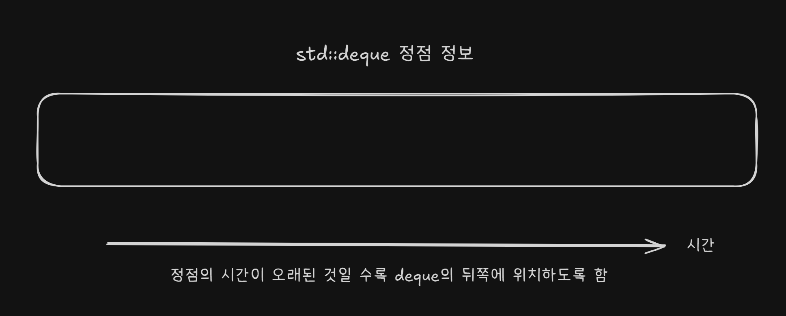
로컬 상의 (0.f, -0.5f, 0.f), (0.f, 0.5f, 0.f) 라는 위치에 두 정점을 찍고 정점이 4개 이상 모이는 경우 텍스쳐를 4개 이상의 정점에 입혀 이펙트가 보일 수 있도록 하였습니다.
- 트레일 버퍼 만드는 Code
📝 Code
HRESULT CVIBufferTrail::Initialize(void* pArg)
{
// pArg로 받은 TRAIL_DESC 구조체를 pDesc로 캐스팅하여 사용
TRAIL_DESC* pDesc = static_cast<TRAIL_DESC*>(pArg);
m_fTrailLength = pDesc->fTrailLength; // 트레일 전체 길이
m_iNumMaxVertices = pDesc->iNumMaxVertices; // 트래일 버퍼의 최대 정점 개수
m_fOffset = pDesc->fOffset; // 정점간 간격(위 아래로의 간격을 의미합니다.
m_fLifeTime = pDesc->fLifeTime; // 트레일 버퍼의 정점 지속 시간
if (0.f == pDesc->vLocalHigh.x && 0.f == pDesc->vLocalHigh.y && 0.f == pDesc->vLocalHigh.z)
m_vLocalTrailHigh = m_vLocalTrailHigh;
if (0.f == pDesc->vLocalLow.x && 0.f == pDesc->vLocalLow.y && 0.f == pDesc->vLocalLow.z)
m_vLocalTrailLow = m_vLocalTrailLow;
m_iNumVertexBuffers = 1;
m_iVertexStride = sizeof(VTX_POSTEX_TIME);
m_iNumVertices = m_iNumMaxVertices;
m_iIndexStride = sizeof(_ushort);
// m_iNumIndices는 인덱스 개수를 의미한다.
// (m_iNumVertices / 2 - 1) : 한 줄에 있는 사각형 개수
// * 2 : 각 사각형은 두개의 삼각형으로 구성되기 때문에 곱하기 2
// * 3 : 삼각형 하나당 3개의 인덱스가 필요하기 때문에 곱하기 3
//
// ex) 최대 정점의 개수가 10개인 경우 3 * 2 * (10 / 2 - 1) => 24
// . . . . .
// . . . . .
m_iNumIndices = 3 * 2 * (m_iNumVertices / 2 - 1);
m_eIndexFormat = DXGI_FORMAT_R16_UINT;
m_ePrimitiveTopology = D3D_PRIMITIVE_TOPOLOGY_TRIANGLELIST;
#pragma region "VERTEX_BUFFER 생성"
ZeroMemory(&m_BufferDesc, sizeof m_BufferDesc);
/* 정점버퍼를 몇 바이트 할당할까요? */
m_BufferDesc.ByteWidth = m_iVertexStride * m_iNumVertices;
m_BufferDesc.BindFlags = D3D11_BIND_VERTEX_BUFFER;
m_BufferDesc.Usage = D3D11_USAGE_DYNAMIC;
m_BufferDesc.StructureByteStride = m_iVertexStride;
m_BufferDesc.CPUAccessFlags = D3D11_CPU_ACCESS_WRITE;
m_BufferDesc.MiscFlags = 0;
VTX_POSTEX_TIME* pVertices = new VTX_POSTEX_TIME[m_iNumVertices];
ZeroMemory(pVertices, sizeof(VTX_POSTEX_TIME) * m_iNumVertices);
ZeroMemory(&m_SubResourceDesc, sizeof m_SubResourceDesc);
m_SubResourceDesc.pSysMem = pVertices;
if (FAILED(__super::CreateBuffer(&(this->m_pVB))))
return E_FAIL;
#pragma endregion
#pragma region "INDEX_BUFFER 생성"
ZeroMemory(&m_BufferDesc, sizeof m_BufferDesc);
m_BufferDesc.ByteWidth = m_iIndexStride * m_iNumIndices;
m_BufferDesc.BindFlags = D3D11_BIND_INDEX_BUFFER;
m_BufferDesc.Usage = D3D11_USAGE_DEFAULT;
m_BufferDesc.StructureByteStride = /*m_iIndexStride*/0;
m_BufferDesc.CPUAccessFlags = 0;
m_BufferDesc.MiscFlags = 0;
_ushort* pIndices = new _ushort[m_iNumIndices];
ZeroMemory(pIndices, sizeof(_ushort) * m_iNumIndices);
_uint iNowVertexIndex = 0;
// 삼각형 개수 계산
_uint iNumTriCnt = m_iNumIndices / 3;
// 4개의 정점마다 두개의 삼각형을 만들어 사각형을 생성한다.
for (_uint i = 0; i < iNumTriCnt; i += 2)
{
pIndices[iNowVertexIndex++] = i; // 현재 프레임 윗 부분
pIndices[iNowVertexIndex++] = i + 2; // 이전 프레임 윗 부분
pIndices[iNowVertexIndex++] = i + 3; // 이전 프레임 아랫부분
pIndices[iNowVertexIndex++] = i; // 현재 프레임 윗 부분
pIndices[iNowVertexIndex++] = i + 3; // 이전 프레임 아랫 부분
pIndices[iNowVertexIndex++] = i + 1; // 현재 프레임 아랫 부분
}
ZeroMemory(&m_SubResourceDesc, sizeof(D3D11_SUBRESOURCE_DATA));
m_SubResourceDesc.pSysMem = pIndices;
if (FAILED(__super::CreateBuffer(&(this->m_pIB))))
return E_FAIL;
#pragma endregion
SafeDeleteArray(pVertices);
SafeDeleteArray(pIndices);
m_TrailVertices.resize(m_iNumMaxVertices);
return S_OK;
}트레일 이펙트의 최대 정점 개수가 10개인 경우 인덱스의 개수는 아래와 같이 구할 수 있게 해두었습니다.
칼을 휘두르는 것 자체가 앞으로 휘두르는게 일반 적이기 때문에 로컬상의 정점을 WorldMatrilx(칼 끝 월드 행렬)에 곱하여 로컬상에 존재하던 정점을 월드상에 배치하고 deque의 앞부분에 두개의 정점을 push_front하여 관리할 수 있도록 하였습니다.
📝 Code
m_iNumIndices = 3 * 2 * (m_iNumVertices / 2 - 1); // m_iNumVertices 가 10인 경우 m_iNumIndices 는 24가 나오게 됩니다.왼손 법칙에 따라 인덱스 버퍼를 만들 때 아래와 같이 인덱스들의 순서를 정해주고 있습니다.
📝 Code
// 4개의 정점마다 두개의 삼각형을 만들어 사각형을 생성한다.
for (_uint i = 0; i < iNumTriCnt; i += 2)
{
pIndices[iNowVertexIndex++] = i; // 현재 프레임 윗 부분
pIndices[iNowVertexIndex++] = i + 2; // 이전 프레임 윗 부분
pIndices[iNowVertexIndex++] = i + 3; // 이전 프레임 아랫부분
pIndices[iNowVertexIndex++] = i; // 현재 프레임 윗 부분
pIndices[iNowVertexIndex++] = i + 3; // 이전 프레임 아랫 부분
pIndices[iNowVertexIndex++] = i + 1; // 현재 프레임 아랫 부분
}위와 같이 한 이유는 정점이 2개 씩 추가 되기 때문입니다.
예를 들어 아래와 같이 0, 1번 정점만 존재하다가 2, 3번이 추가 된 경우 [0 2 3]을 하나의 삼각형로 삼고 [0 3 1]을 하나의 삼각형으로 삼기 위해서 위와같이 제작하였습니다.
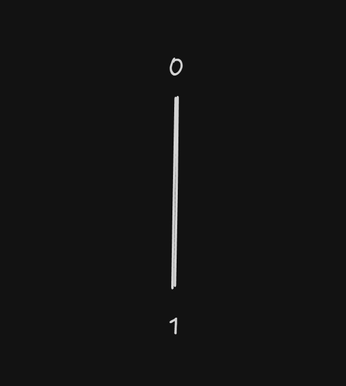
최초의 정점 2개만 존재하는 경우
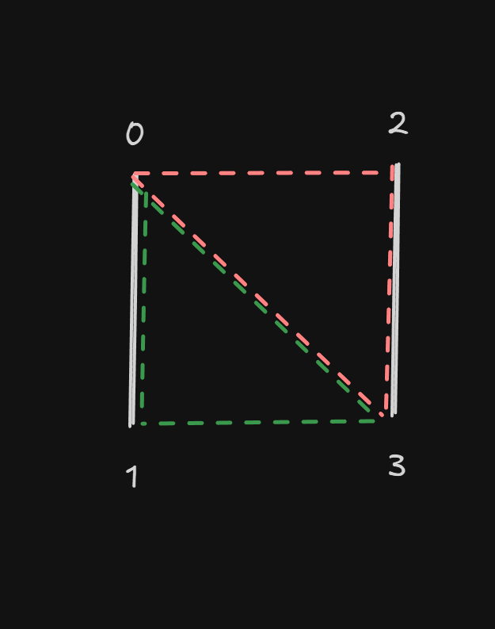
정점 두개가 추가된 경우
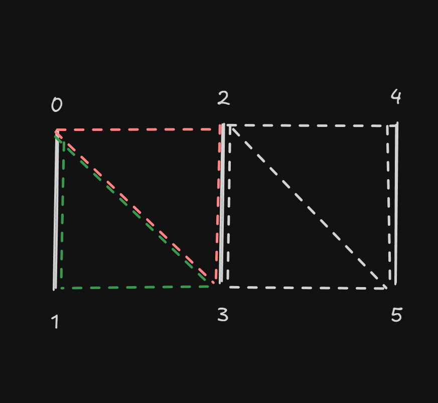
새로 2개가 더 추가된 경우
트레일 버퍼를 만드는 코드입니다.
트레일버퍼는 늘어나야 하기때문에 버퍼를 수정할 수 있도록 버퍼의 옵션에 dynamic 플래그를 주어 버퍼를 수정할 수 있게 하였습니다.
추가적으로 정점의 정보에 시간, 크기등을 추가하여 트레일 정점이 사라질 타이밍을 구현할 수 있도록 하였습니다.
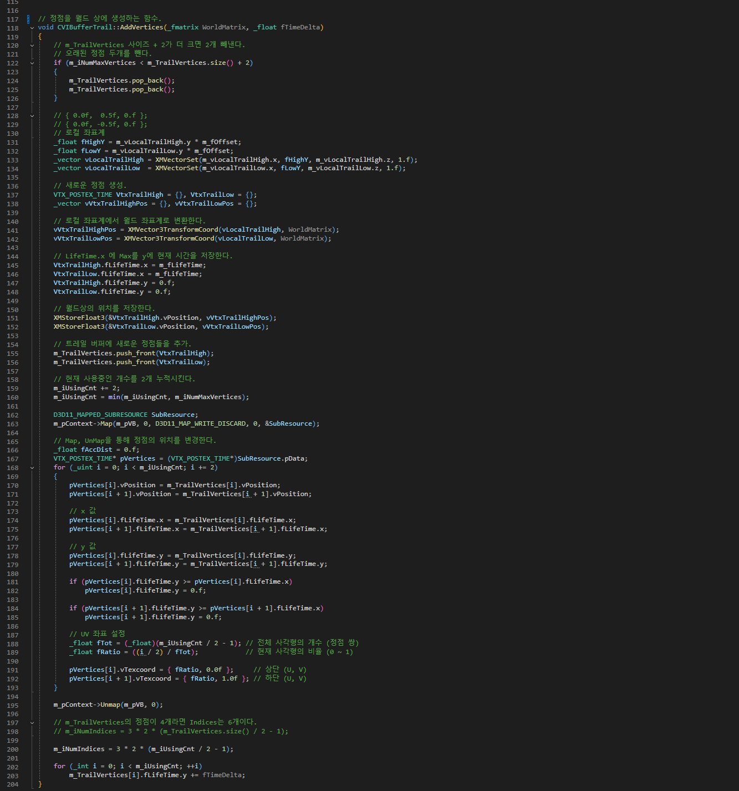
- Code
📝 Code
// 정점을 월드 상에 생성하는 함수.
void CVIBufferTrail::AddVertices(_fmatrix WorldMatrix, _float fTimeDelta)
{
// m_TrailVertices 사이즈 + 2가 더 크면 2개 빼낸다.
// 오래된 정점 두개를 뺀다.
if (m_iNumMaxVertices < m_TrailVertices.size() + 2)
{
m_TrailVertices.pop_back();
m_TrailVertices.pop_back();
}
// { 0.0f, 0.5f, 0.f };
// { 0.0f, -0.5f, 0.f };
// 로컬 좌표계
_float fHighY = m_vLocalTrailHigh.y * m_fOffset;
_float fLowY = m_vLocalTrailLow.y * m_fOffset;
_vector vLocalTrailHigh = XMVectorSet(m_vLocalTrailHigh.x, fHighY, m_vLocalTrailHigh.z, 1.f);
_vector vLocalTrailLow = XMVectorSet(m_vLocalTrailLow.x, fLowY, m_vLocalTrailLow.z, 1.f);
// 새로운 정점 생성.
VTX_POSTEX_TIME VtxTrailHigh = {}, VtxTrailLow = {};
_vector vVtxTrailHighPos = {}, vVtxTrailLowPos = {};
// 로컬 좌표계에서 월드 좌표계로 변환한다.
vVtxTrailHighPos = XMVector3TransformCoord(vLocalTrailHigh, WorldMatrix);
vVtxTrailLowPos = XMVector3TransformCoord(vLocalTrailLow, WorldMatrix);
// LifeTime.x 에 Max를 y에 현재 시간을 저장한다.
VtxTrailHigh.fLifeTime.x = m_fLifeTime;
VtxTrailLow.fLifeTime.x = m_fLifeTime;
VtxTrailHigh.fLifeTime.y = 0.f;
VtxTrailLow.fLifeTime.y = 0.f;
// 월드상의 위치를 저장한다.
XMStoreFloat3(&VtxTrailHigh.vPosition, vVtxTrailHighPos);
XMStoreFloat3(&VtxTrailLow.vPosition, vVtxTrailLowPos);
// 트레일 버퍼에 새로운 정점들을 추가.
m_TrailVertices.push_front(VtxTrailHigh);
m_TrailVertices.push_front(VtxTrailLow);
// 현재 사용중인 개수를 2개 누적시킨다.
m_iUsingCnt += 2;
m_iUsingCnt = min(m_iUsingCnt, m_iNumMaxVertices);
D3D11_MAPPED_SUBRESOURCE SubResource;
m_pContext->Map(m_pVB, 0, D3D11_MAP_WRITE_DISCARD, 0, &SubResource);
// Map, UnMap을 통해 정점의 위치를 변경한다.
_float fAccDist = 0.f;
VTX_POSTEX_TIME* pVertices = (VTX_POSTEX_TIME*)SubResource.pData;
for (_uint i = 0; i < m_iUsingCnt; i += 2)
{
pVertices[i].vPosition = m_TrailVertices[i].vPosition;
pVertices[i + 1].vPosition = m_TrailVertices[i + 1].vPosition;
// x 값
pVertices[i].fLifeTime.x = m_TrailVertices[i].fLifeTime.x;
pVertices[i + 1].fLifeTime.x = m_TrailVertices[i + 1].fLifeTime.x;
// y 값
pVertices[i].fLifeTime.y = m_TrailVertices[i].fLifeTime.y;
pVertices[i + 1].fLifeTime.y = m_TrailVertices[i + 1].fLifeTime.y;
if (pVertices[i].fLifeTime.y >= pVertices[i].fLifeTime.x)
pVertices[i].fLifeTime.y = 0.f;
if (pVertices[i + 1].fLifeTime.y >= pVertices[i + 1].fLifeTime.x)
pVertices[i + 1].fLifeTime.y = 0.f;
// UV 좌표 설정
_float fTot = (_float)(m_iUsingCnt / 2 - 1); // 전체 사각형의 개수 (정점 쌍)
_float fRatio = ((i / 2) / fTot); // 현재 사각형의 비율 (0 ~ 1)
pVertices[i].vTexcoord = { fRatio, 0.0f }; // 상단 (U, V)
pVertices[i + 1].vTexcoord = { fRatio, 1.0f }; // 하단 (U, V)
}
m_pContext->Unmap(m_pVB, 0);
// m_TrailVertices의 정점이 4개라면 Indices는 6개이다.
// m_iNumIndices = 3 * 2 * (m_TrailVertices.size() / 2 - 1);
m_iNumIndices = 3 * 2 * (m_iUsingCnt / 2 - 1);
for (_int i = 0; i < m_iUsingCnt; ++i)
m_TrailVertices[i].fLifeTime.y += fTimeDelta;
}트레일 버퍼의 정점을 추가하는 코드입니다. deque를 활용하여 새롭게 추가된 정점은 push_front를 통해 추가하고 시간이 오래된 정점의 경우 pop_back을 통해 제거하도록 하였습니다.
추가적으로 생각해볼 부분
(베지어 곡선을 통해서 Trail Effect를 좀더 부드럽게 만들 수 있을지 않을까라는 생각)
Texture Effect
벽에 총알이 맞는경우 자국과 같은 효과를 알파 블렌딩과 약간의 HLSL를 통해 구현하였습니다. 시간이 지날 수록 알파값을 강하게 주어 총알 자국이 시간이 지남에 따라 흐릿해질 수 있도록 비율을 계산하여 구현하였습니다.
총알이 튀기는 부분은 벽에 AABB 충돌을 담당하는 충돌체를 미리 배치하고 총알이 향하는 방향과 부딪힌 면을 찾아낸후 내적 외적 연산을 통해 면에 수직인 법선 벡터를 계산하여 해당 방향으로 이펙트가 나오도록 하였습니다.
>
구현결과

<보스 공격 패턴2>
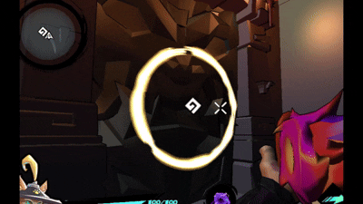
<다음 스테이지로 가는 문>
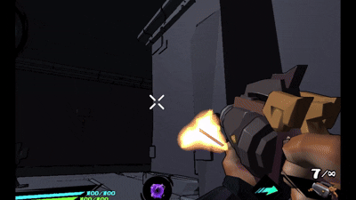
<총알과 벽 충돌 시 발생하는 이펙트>
구현과정
<보스 공격 패턴2>의 경우 메테오(돌덩이)가 지나온 위치를 추적해야 했는데 추적하는 방식 대신 메테오가 날아가는 동안 일정시간 간격을 두고 번개가 내려치는 이펙트를 생성하였습니다.
<총알과 벽 충돌시 발생하는 이펙트>의 경우 총알에 Collider를 씌우고 벽과 충돌하는 순간 Ray를 해당지점으로 쏘아서 정육면체와 Ray가 부딪힌 위치와 법선 벡터를 찾아 이펙트의 Right, Up, Look 벡터를 알맞게 수정하여 솟아오르도록 구현하였습니다.
<다음 스테이지로 가는 문> 이펙트의 경우 애니매이션 없이 이펙트 자체를 스케일링 하면서 동시에 노이즈 텍스쳐의 Alpha값을 활용하여 부분적으로 사라지는 느낌을 구현하였습니다.
추가적으로 위의 이펙트 말고도 여러 이펙트 객체들을 EffectManager라는 클래스를 통해 이펙트들의 활성/비활성 화 상태와 생명주기를 관리할 수 있도록 하였고 이펙트객체의 Right, Up, Look 회전값 설정, 위치 계산 등을 EffectManager가 수행하도록 하였습니다.
구현이유
게임 내에 Effect는 필수 요소라 생각하여 여러 종류의 이펙트들을 넣게 되었습니다.
이렇게 구현한 이유
<보스 공격 패턴2>의 경우 지나온 위치를 추적하였어도 됬지만 이펙트가 생성되는 시간 간격을 주는 것과 큰 차이가 없어서 시간간격을 주는 방식을 선택하였고
<총알 과 벽 충돌 이펙트>의 경우 총알이 언제 벽이나 장애물에 부딪힐지 모르기 때문에 부딪히고 난후 Ray를 쏘아 벽이나 장애물의 노말 벡터를 계산하도록 하였습니다.
Code
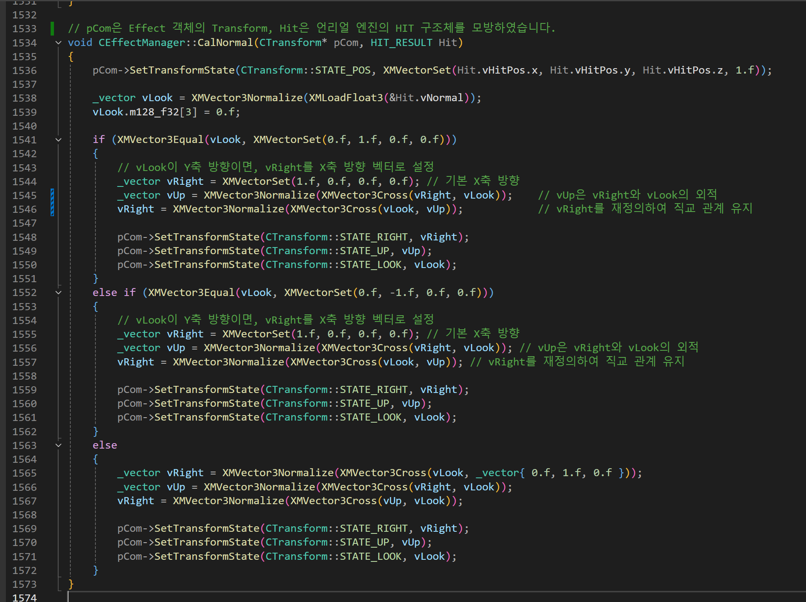
- Code
📝 Code
// pCom은 Effect 객체의 Transform, Hit은 언리얼 엔진의 HIT 구조체를 모방하였습니다.
void CEffectManager::CalNormal(CTransform* pCom, HIT_RESULT Hit)
{
pCom->SetTransformState(CTransform::STATE_POS, XMVectorSet(Hit.vHitPos.x, Hit.vHitPos.y, Hit.vHitPos.z, 1.f));
_vector vLook = XMVector3Normalize(XMLoadFloat3(&Hit.vNormal));
vLook.m128_f32[3] = 0.f;
if (XMVector3Equal(vLook, XMVectorSet(0.f, 1.f, 0.f, 0.f)))
{
// vLook이 Y축 방향이면, vRight를 X축 방향 벡터로 설정
_vector vRight = XMVectorSet(1.f, 0.f, 0.f, 0.f); // 기본 X축 방향
_vector vUp = XMVector3Normalize(XMVector3Cross(vRight, vLook)); // vUp은 vRight와 vLook의 외적
vRight = XMVector3Normalize(XMVector3Cross(vLook, vUp)); // vRight를 재정의하여 직교 관계 유지
pCom->SetTransformState(CTransform::STATE_RIGHT, vRight);
pCom->SetTransformState(CTransform::STATE_UP, vUp);
pCom->SetTransformState(CTransform::STATE_LOOK, vLook);
}
else if (XMVector3Equal(vLook, XMVectorSet(0.f, -1.f, 0.f, 0.f)))
{
// vLook이 Y축 방향이면, vRight를 X축 방향 벡터로 설정
_vector vRight = XMVectorSet(1.f, 0.f, 0.f, 0.f); // 기본 X축 방향
_vector vUp = XMVector3Normalize(XMVector3Cross(vRight, vLook)); // vUp은 vRight와 vLook의 외적
vRight = XMVector3Normalize(XMVector3Cross(vLook, vUp)); // vRight를 재정의하여 직교 관계 유지
pCom->SetTransformState(CTransform::STATE_RIGHT, vRight);
pCom->SetTransformState(CTransform::STATE_UP, vUp);
pCom->SetTransformState(CTransform::STATE_LOOK, vLook);
}
else
{
_vector vRight = XMVector3Normalize(XMVector3Cross(vLook, _vector{ 0.f, 1.f, 0.f }));
_vector vUp = XMVector3Normalize(XMVector3Cross(vRight, vLook));
vRight = XMVector3Normalize(XMVector3Cross(vUp, vLook));
pCom->SetTransformState(CTransform::STATE_RIGHT, vRight);
pCom->SetTransformState(CTransform::STATE_UP, vUp);
pCom->SetTransformState(CTransform::STATE_LOOK, vLook);
}
}Effect객체의 Transform 컴포넌트 포인터와 언리얼의 HIT구조체를 모방한 HIT_RESULT구조체를 매개 변수로 받아와 면의 수직인 법선 벡터를 계산하여 이펙트 객체의 Transform의 Right, Up, Look 벡터를 조절하는 코드입니다.
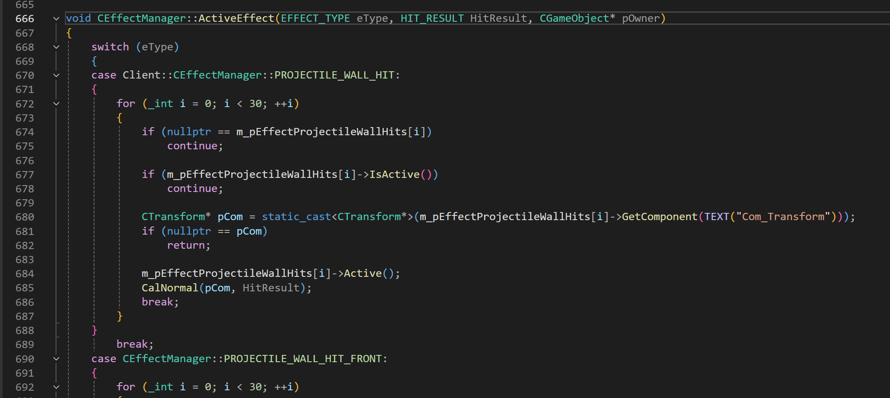
실제 이펙트 객체를 활성/비활성화 해주는 함수의 일부입니다.
이펙트 타입에 따라 활성화 여부를 확인하고 조건에 만족한다면 활성화를 시켜 실제 화면에 렌더링 할 수 있도록 해주는 함수입니다.
Particle & Instancing
Particle & Instancing (+Gemetry Shader)
파티클 객체의 수가 많아 DrawCall을 줄이기 위해 파티클 전용 버퍼를 생성및 관리하여 파티클을 출력하였습니다.
파티클 인스턴스 버퍼 구조체에 위치, 속도, 생명주기, 반복 재생 여부 등의 정보를 정의하고, 각 파티클 객체마다 해당 값을 랜덤하게 초기화하여 다양한 움직임을 구현하였습니다. 또한 방향 벡터(Pivot) 개념을 도입하여 파티클이 지정된 방향으로 퍼지거나 모이도록 제어 가능하도록 하였고, 일부 파티클에는 중력 효과를 적용하여 시간 경과에 따라 자연스럽게 하강하는 동작을 구현하였습니다.
>
구현 결과
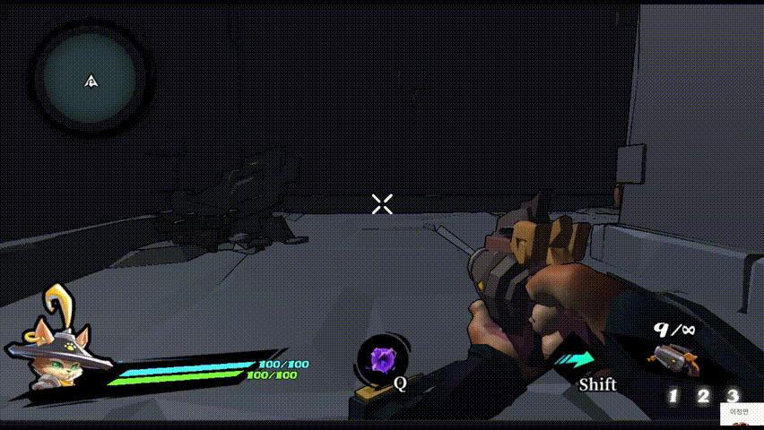
몬스터 생성 파티클, 몬스터가 걸을 때 생기는 파티클, 총알이 맞을 때 생기는 파티클
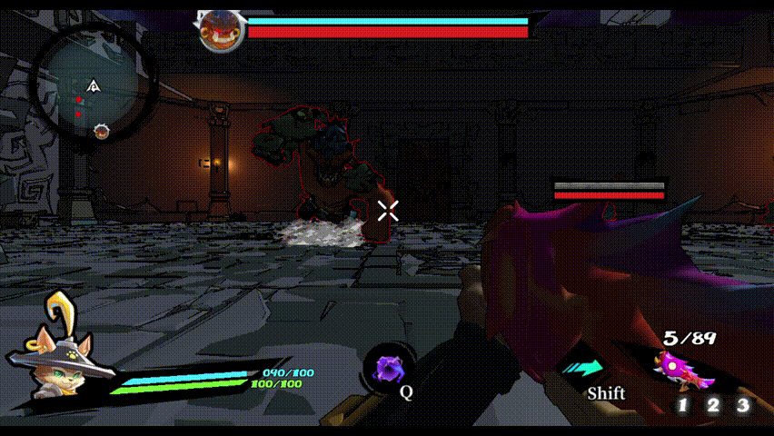
보스 몬스터가 땅을 내려찍고 생기는 돌조각 파티클과 연기 파티클
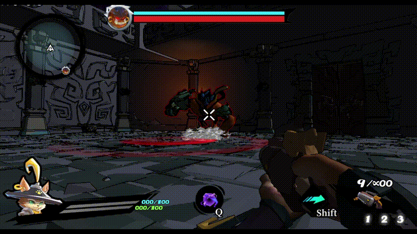
보스 몬스터가 메테오를 던지기전 메테오 주위로 모이면서 생성되는 파티클
구현 이유
이펙트와 더불어 파티클 또한 게임의 퀄리티를 높이고 화려한 효과를 줄 수 있다는 점에서 구현하게 되었습니다.
Code
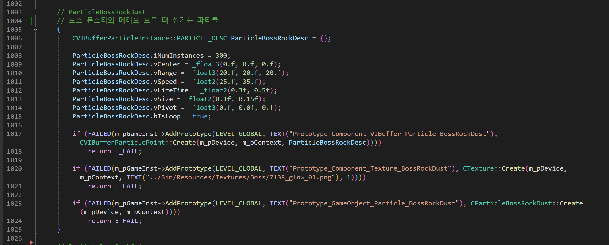
- Code
📝 Code
// ParticleBossRockDust
// 보스 몬스터의 메테오 모을 때 생기는 파티클
{
CVIBufferParticleInstance::PARTICLE_DESC ParticleBossRockDesc = {};
ParticleBossRockDesc.iNumInstances = 300;
ParticleBossRockDesc.vCenter = _float3(0.f, 0.f, 0.f);
ParticleBossRockDesc.vRange = _float3(20.f, 20.f, 20.f);
ParticleBossRockDesc.vSpeed = _float2(25.f, 35.f);
ParticleBossRockDesc.vLifeTime = _float2(0.3f, 0.5f);
ParticleBossRockDesc.vSize = _float2(0.1f, 0.15f);
ParticleBossRockDesc.vPivot = _float3(0.f, 0.0f, 0.f);
ParticleBossRockDesc.bIsLoop = true;
if (FAILED(m_pGameInst->AddPrototype(LEVEL_GLOBAL, TEXT("Prototype_Component_VIBuffer_Particle_BossRockDust"), CVIBufferParticlePoint::Create(m_pDevice, m_pContext, ParticleBossRockDesc))))
return E_FAIL;
if (FAILED(m_pGameInst->AddPrototype(LEVEL_GLOBAL, TEXT("Prototype_Component_Texture_BossRockDust"), CTexture::Create(m_pDevice, m_pContext, TEXT("../Bin/Resources/Textures/Boss/7138_glow_01.png"), 1))))
return E_FAIL;
if (FAILED(m_pGameInst->AddPrototype(LEVEL_GLOBAL, TEXT("Prototype_GameObject_Particle_BossRockDust"), CParticleBossRockDust::Create(m_pDevice, m_pContext))))
return E_FAIL;
}PARTICLE_DESC 라는 구조체에 초기 설정값들을 채워 놓고 해당 구조체를 전달하여 인스턴싱할 파티클 정점 객체가 초기값을 설정할 수 있도록 해주었습니다.
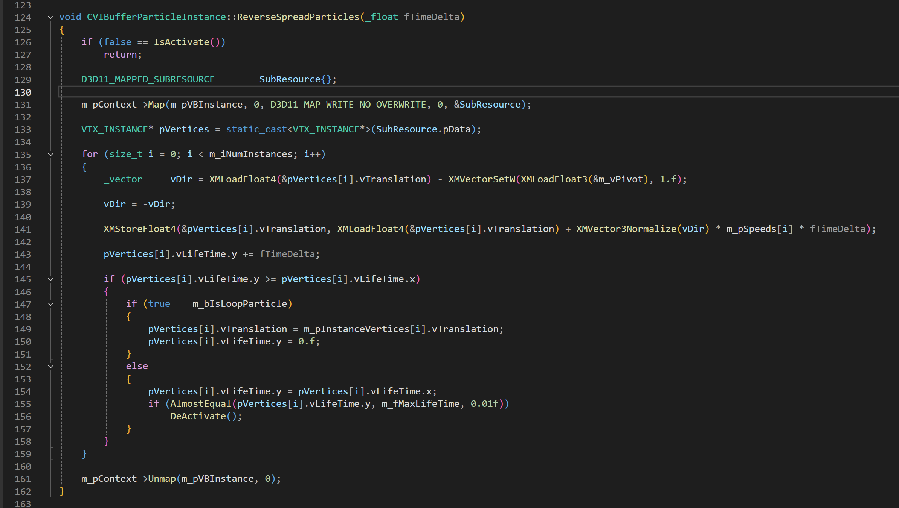
- Code
📝 Code
void CVIBufferParticleInstance::ReverseSpreadParticles(_float fTimeDelta)
{
if (false == IsActivate())
return;
D3D11_MAPPED_SUBRESOURCE SubResource{};
m_pContext->Map(m_pVBInstance, 0, D3D11_MAP_WRITE_NO_OVERWRITE, 0, &SubResource);
VTX_INSTANCE* pVertices = static_cast<VTX_INSTANCE*>(SubResource.pData);
for (size_t i = 0; i < m_iNumInstances; i++)
{
_vector vDir = XMLoadFloat4(&pVertices[i].vTranslation) - XMVectorSetW(XMLoadFloat3(&m_vPivot), 1.f);
vDir = -vDir;
XMStoreFloat4(&pVertices[i].vTranslation, XMLoadFloat4(&pVertices[i].vTranslation) + XMVector3Normalize(vDir) * m_pSpeeds[i] * fTimeDelta);
pVertices[i].vLifeTime.y += fTimeDelta;
if (pVertices[i].vLifeTime.y >= pVertices[i].vLifeTime.x)
{
if (true == m_bIsLoopParticle)
{
pVertices[i].vTranslation = m_pInstanceVertices[i].vTranslation;
pVertices[i].vLifeTime.y = 0.f;
}
else
{
pVertices[i].vLifeTime.y = pVertices[i].vLifeTime.x;
if (AlmostEqual(pVertices[i].vLifeTime.y, m_fMaxLifeTime, 0.01f))
DeActivate();
}
}
}
m_pContext->Unmap(m_pVBInstance, 0);
}📝 Code
void CVIBufferParticleInstance::ReverseSpreadParticles(_float fTimeDelta)
{
if (false == IsActivate())
return;
D3D11_MAPPED_SUBRESOURCE SubResource{};
m_pContext->Map(m_pVBInstance, 0, D3D11_MAP_WRITE_NO_OVERWRITE, 0, &SubResource);
VTX_INSTANCE* pVertices = static_cast<VTX_INSTANCE*>(SubResource.pData);
for (size_t i = 0; i < m_iNumInstances; i++)
{
_vector vDir = XMLoadFloat4(&pVertices[i].vTranslation) - XMVectorSetW(XMLoadFloat3(&m_vPivot), 1.f);
vDir = -vDir;
XMStoreFloat4(&pVertices[i].vTranslation, XMLoadFloat4(&pVertices[i].vTranslation) + XMVector3Normalize(vDir) * m_pSpeeds[i] * fTimeDelta);
pVertices[i].vLifeTime.y += fTimeDelta;
if (pVertices[i].vLifeTime.y >= pVertices[i].vLifeTime.x)
{
if (true == m_bIsLoopParticle)
{
pVertices[i].vTranslation = m_pInstanceVertices[i].vTranslation;
pVertices[i].vLifeTime.y = 0.f;
}
else
{
pVertices[i].vLifeTime.y = pVertices[i].vLifeTime.x;
if (AlmostEqual(pVertices[i].vLifeTime.y, m_fMaxLifeTime, 0.01f))
DeActivate();
}
}
}
m_pContext->Unmap(m_pVBInstance, 0);
}인게임 내에서 보스 몬스터가 메테오 공격시전시 파티클들이 메테오 중심으로 모이게 하는 코드입니다.
피봇이라는 개념을 두어 피봇과 파티클 객체의 위치를 통해 방향벡터를 계산하고 해당 방향벡터로 파티클을 이동시켜 퍼지거나 모일 수 있도록 기능을 구현하였습니다.
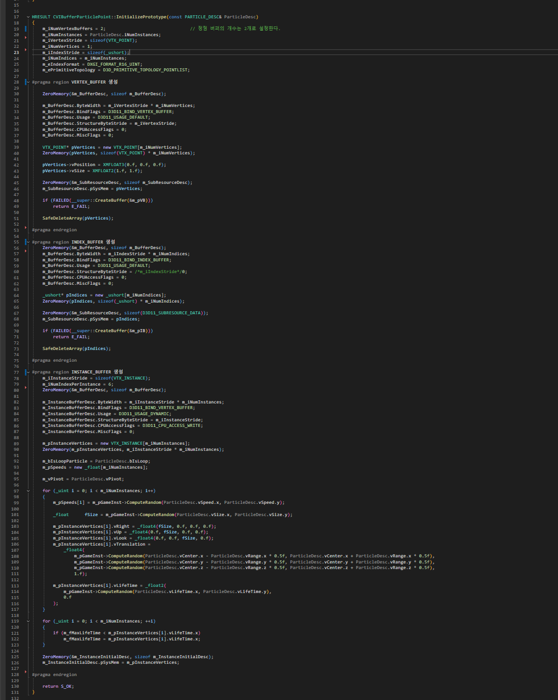
- Code
📝 Code
HRESULT CVIBufferParticlePoint::InitializePrototype(const PARTICLE_DESC& ParticleDesc)
{
m_iNumVertexBuffers = 2; // 정점 버퍼의 개수는 2개로 설정한다.
m_iNumInstances = ParticleDesc.iNumInstances;
m_iVertexStride = sizeof(VTX_POINT);
m_iNumVertices = 1;
m_iIndexStride = sizeof(_ushort);
m_iNumIndices = m_iNumInstances;
m_eIndexFormat = DXGI_FORMAT_R16_UINT;
m_ePrimitiveTopology = D3D_PRIMITIVE_TOPOLOGY_POINTLIST;
#pragma region VERTEX_BUFFER 생성
ZeroMemory(&m_BufferDesc, sizeof m_BufferDesc);
m_BufferDesc.ByteWidth = m_iVertexStride * m_iNumVertices;
m_BufferDesc.BindFlags = D3D11_BIND_VERTEX_BUFFER;
m_BufferDesc.Usage = D3D11_USAGE_DEFAULT;
m_BufferDesc.StructureByteStride = m_iVertexStride;
m_BufferDesc.CPUAccessFlags = 0;
m_BufferDesc.MiscFlags = 0;
VTX_POINT* pVertices = new VTX_POINT[m_iNumVertices];
ZeroMemory(pVertices, sizeof(VTX_POINT) * m_iNumVertices);
pVertices->vPosition = XMFLOAT3(0.f, 0.f, 0.f);
pVertices->vSize = XMFLOAT2(1.f, 1.f);
ZeroMemory(&m_SubResourceDesc, sizeof m_SubResourceDesc);
m_SubResourceDesc.pSysMem = pVertices;
if (FAILED(__super::CreateBuffer(&m_pVB)))
return E_FAIL;
SafeDeleteArray(pVertices);
#pragma endregion
#pragma region INDEX_BUFFER 생성
ZeroMemory(&m_BufferDesc, sizeof m_BufferDesc);
m_BufferDesc.ByteWidth = m_iIndexStride * m_iNumIndices;
m_BufferDesc.BindFlags = D3D11_BIND_INDEX_BUFFER;
m_BufferDesc.Usage = D3D11_USAGE_DEFAULT;
m_BufferDesc.StructureByteStride = /*m_iIndexStride*/0;
m_BufferDesc.CPUAccessFlags = 0;
m_BufferDesc.MiscFlags = 0;
_ushort* pIndices = new _ushort[m_iNumIndices];
ZeroMemory(pIndices, sizeof(_ushort) * m_iNumIndices);
ZeroMemory(&m_SubResourceDesc, sizeof(D3D11_SUBRESOURCE_DATA));
m_SubResourceDesc.pSysMem = pIndices;
if (FAILED(__super::CreateBuffer(&m_pIB)))
return E_FAIL;
SafeDeleteArray(pIndices);
#pragma endregion
#pragma region INSTANCE_BUFFER 생성
m_iInstanceStride = sizeof(VTX_INSTANCE);
m_iNumIndexPerInstance = 6;
ZeroMemory(&m_BufferDesc, sizeof m_BufferDesc);
m_InstanceBufferDesc.ByteWidth = m_iInstanceStride * m_iNumInstances;
m_InstanceBufferDesc.BindFlags = D3D11_BIND_VERTEX_BUFFER;
m_InstanceBufferDesc.Usage = D3D11_USAGE_DYNAMIC;
m_InstanceBufferDesc.StructureByteStride = m_iInstanceStride;
m_InstanceBufferDesc.CPUAccessFlags = D3D11_CPU_ACCESS_WRITE;
m_InstanceBufferDesc.MiscFlags = 0;
m_pInstanceVertices = new VTX_INSTANCE[m_iNumInstances];
ZeroMemory(m_pInstanceVertices, m_iInstanceStride * m_iNumInstances);
m_bIsLoopParticle = ParticleDesc.bIsLoop;
m_pSpeeds = new _float[m_iNumInstances];
m_vPivot = ParticleDesc.vPivot;
for (_uint i = 0; i < m_iNumInstances; i++)
{
m_pSpeeds[i] = m_pGameInst->ComputeRandom(ParticleDesc.vSpeed.x, ParticleDesc.vSpeed.y);
_float fSize = m_pGameInst->ComputeRandom(ParticleDesc.vSize.x, ParticleDesc.vSize.y);
m_pInstanceVertices[i].vRight = _float4(fSize, 0.f, 0.f, 0.f);
m_pInstanceVertices[i].vUp = _float4(0.f, fSize, 0.f, 0.f);
m_pInstanceVertices[i].vLook = _float4(0.f, 0.f, fSize, 0.f);
m_pInstanceVertices[i].vTranslation =
_float4(
m_pGameInst->ComputeRandom(ParticleDesc.vCenter.x - ParticleDesc.vRange.x * 0.5f, ParticleDesc.vCenter.x + ParticleDesc.vRange.x * 0.5f),
m_pGameInst->ComputeRandom(ParticleDesc.vCenter.y - ParticleDesc.vRange.y * 0.5f, ParticleDesc.vCenter.y + ParticleDesc.vRange.y * 0.5f),
m_pGameInst->ComputeRandom(ParticleDesc.vCenter.z - ParticleDesc.vRange.z * 0.5f, ParticleDesc.vCenter.z + ParticleDesc.vRange.z * 0.5f),
1.f);
m_pInstanceVertices[i].vLifeTime = _float2(
m_pGameInst->ComputeRandom(ParticleDesc.vLifeTime.x, ParticleDesc.vLifeTime.y),
0.f
);
}
for (_uint i = 0; i < m_iNumInstances; ++i)
{
if (m_fMaxLifeTime < m_pInstanceVertices[i].vLifeTime.x)
m_fMaxLifeTime = m_pInstanceVertices[i].vLifeTime.x;
}
ZeroMemory(&m_InstanceInitialDesc, sizeof m_InstanceInitialDesc);
m_InstanceInitialDesc.pSysMem = m_pInstanceVertices;
#pragma endregion
return S_OK;
}전달 받은 구조체로 부터 값을 가져와 인스턴싱 버퍼의 초기값을 설정하고 생성할 수 있게 해주는 코드입니다.
Navigation Mesh (+Picking)
Navigation Mesh 제작
(본인 블로그 정리글입니다)
게임 내 다수 객체의 이동 시 불필요한 충돌 연산을 줄이고 유지보수를 용이하게 하기 위해, 이동 가능 지역을 개발자가 직접 지정하는 방식의 Navigation Mesh 시스템을 구현하였습니다.
시계방향으로 선택한 3개의 점을 기반으로 삼각형(Cell)을 구성하고, vector와 모듈 연산을 활용해 클릭 기반 Cell 생성을 자동화하였으며, 내적 연산을 통해 오브젝트의 삼각형 포함 여부를 판별하고 평면 방정식을 이용한 높이 보간으로 자연스러운 지형 이동을 구현하였습니다. 또한 경계 삼각형 도달 시 벡터 연산을 통해 외곽 이탈 없이 면을 따라 회전 이동할 수 있도록 처리하였고, 마우스 피킹을 통해 스크린 좌표에서 NDC, 월드 좌표로 변환 후 Ray를 발사하여 충돌 지점을 기반으로 Cell을 생성할 수 있도록 기능을 설계하였습니다.
>
구현 결과
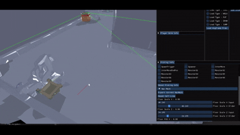
Navigation Mesh 제작과정중 일부
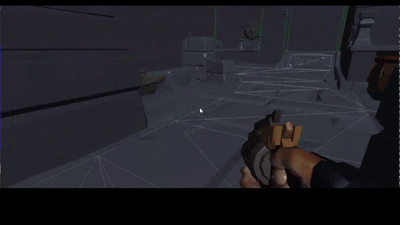
완성된 Navigation Mesh위를 이동
구현 이유
우선 맵 자체에 벽과 장애물들이 많아 3D 오브젝트가 스테이지를 돌아다니게 되면 충돌 여부를 매틱 확인해야한다는 점과 이에 대한 처리가 까다로웠기 때문에 NavigationMesh를 직접 만들어 개발자가 갈 수 있는 영역과 갈 수 없는 영역을 직접 제어 및 관리를 할 수 있는 장점과 충돌 연산을 줄여 성능향상에 도움이 될 것이라 판단하여 구현하게 되었습니다.
Code
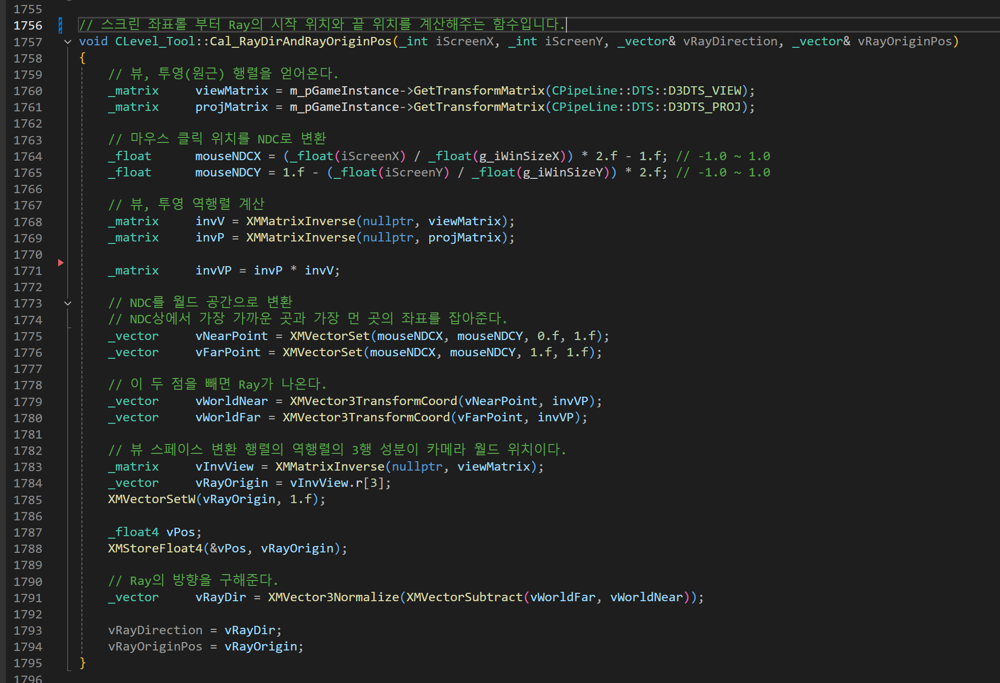
- Code
📝 Code
// 스크린 좌표롤 부터 Ray의 시작 위치와 끝 위치를 계산해주는 함수입니다.
void CLevel_Tool::Cal_RayDirAndRayOriginPos(_int iScreenX, _int iScreenY, _vector& vRayDirection, _vector& vRayOriginPos)
{
// 뷰, 투영(원근) 행렬을 얻어온다.
_matrix viewMatrix = m_pGameInstance->GetTransformMatrix(CPipeLine::DTS::D3DTS_VIEW);
_matrix projMatrix = m_pGameInstance->GetTransformMatrix(CPipeLine::DTS::D3DTS_PROJ);
// 마우스 클릭 위치를 NDC로 변환
_float mouseNDCX = (_float(iScreenX) / _float(g_iWinSizeX)) * 2.f - 1.f; // -1.0 ~ 1.0
_float mouseNDCY = 1.f - (_float(iScreenY) / _float(g_iWinSizeY)) * 2.f; // -1.0 ~ 1.0
// 뷰, 투영 역행렬 계산
_matrix invV = XMMatrixInverse(nullptr, viewMatrix);
_matrix invP = XMMatrixInverse(nullptr, projMatrix);
_matrix invVP = invP * invV;
// NDC를 월드 공간으로 변환
// NDC상에서 가장 가까운 곳과 가장 먼 곳의 좌표를 잡아준다.
_vector vNearPoint = XMVectorSet(mouseNDCX, mouseNDCY, 0.f, 1.f);
_vector vFarPoint = XMVectorSet(mouseNDCX, mouseNDCY, 1.f, 1.f);
// 이 두 점을 빼면 Ray가 나온다.
_vector vWorldNear = XMVector3TransformCoord(vNearPoint, invVP);
_vector vWorldFar = XMVector3TransformCoord(vFarPoint, invVP);
// 뷰 스페이스 변환 행렬의 역행렬의 3행 성분이 카메라 월드 위치이다.
_matrix vInvView = XMMatrixInverse(nullptr, viewMatrix);
_vector vRayOrigin = vInvView.r[3];
XMVectorSetW(vRayOrigin, 1.f);
_float4 vPos;
XMStoreFloat4(&vPos, vRayOrigin);
// Ray의 방향을 구해준다.
_vector vRayDir = XMVector3Normalize(XMVectorSubtract(vWorldFar, vWorldNear));
vRayDirection = vRayDir;
vRayOriginPos = vRayOrigin;
}마우스의 스크린 좌표로 부터 월드 공간상의 Ray의 시작점과 끝점을 계산해주는 함수입니다.
스크린 상의 마우스 좌표 X, Y를 매개변수로 받고 Ray의 방향과 Ray의 시작위치를 매개 변수로 받습니다.
마우스의 스크린 좌표로 부터 NDC좌표계상으로 좌표를 변환시켜 NDC상의 마우스 좌표를 구하고 NDC공간에서 가장 먼 위치와 가장 가까운 위치(FarPoint, NearPoint)를 구한뒤
‘원근 투영 행렬의 역행렬 * 뷰 스페이스 변환행렬의 역행렬’ 순서로 각 NDC좌표에 곱하여 월드상의 마우스의 가장 먼 위치와 가장 가까운 위치를 계산하고 이 두 좌표를 빼고 정규화하여 Ray의 방향을 설정할 수 있도록 하였습니다.
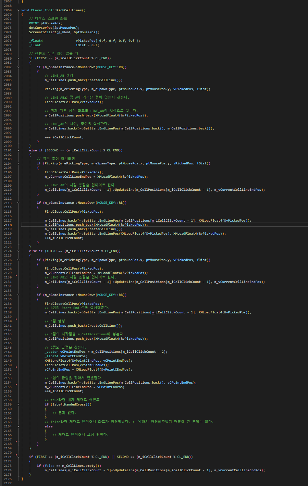
- Code
📝 Code
void CLevel_Tool::PickCellLines()
{
// 마우스 스크린 좌표
POINT ptMousePos;
GetCursorPos(&ptMousePos);
ScreenToClient(g_hWnd, &ptMousePos);
_float4 vPickedPos{ 0.f, 0.f, 0.f, 0.f };
_float fDist = 0.f;
// 한번도 누른 적이 없을 때
if (FIRST == (m_iCellClickCount % CL_END))
{
if (m_pGameInstance->MouseDown(MOUSE_KEY::RB))
{
// LINE_AB 생성
m_CellLines.push_back(CreateCellLine());
Picking(m_ePickingType, m_eSpawnType, ptMousePos.x, ptMousePos.y, vPickedPos, fDist);
// LINE_AB의 점 A에 가까운 점이 있는지 찾는다.
FindClosetCellPos(vPickedPos);
// 현재 찍은 점의 좌표를 LINE_AB의 시점으로 넣는다.
m_CellPositions.push_back(XMLoadFloat4(&vPickedPos));
// LINE_AB의 시점, 종점을 설정한다.
m_CellLines.back()->SetStartEndLinePos(m_CellPositions.back(), m_CellPositions.back());
++m_iCellClickCount;
}
}
else if (SECOND == (m_iCellClickCount % CL_END))
{
// 클릭 중이 아니라면
if (Picking(m_ePickingType, m_eSpawnType, ptMousePos.x, ptMousePos.y, vPickedPos, fDist))
{
FindClosetCellPos(vPickedPos);
m_vCurrentCellLineEndPos = XMLoadFloat4(&vPickedPos);
// LINE_AB의 시점 종점을 업데이트 한다.
m_CellLines[m_iCellClickCount - 1]->UpdateLine(m_CellPositions[m_iCellClickCount - 1], m_vCurrentCellLineEndPos);
}
if (m_pGameInstance->MouseDown(MOUSE_KEY::RB))
{
FindClosetCellPos(vPickedPos);
m_CellLines.back()->SetStartEndLinePos(m_CellPositions[m_iCellClickCount - 1], XMLoadFloat4(&vPickedPos));
m_CellPositions.push_back(XMLoadFloat4(&vPickedPos));
m_CellLines.push_back(CreateCellLine());
m_CellLines.back()->SetStartEndLinePos(XMLoadFloat4(&vPickedPos), XMLoadFloat4(&vPickedPos));
++m_iCellClickCount;
}
}
else if (THIRD == (m_iCellClickCount % CL_END))
{
if (Picking(m_ePickingType, m_eSpawnType, ptMousePos.x, ptMousePos.y, vPickedPos, fDist))
{
FindClosetCellPos(vPickedPos);
m_vCurrentCellLineEndPos = XMLoadFloat4(&vPickedPos);
// LINE_AB의 시점 종점을 업데이트 한다.
m_CellLines[m_iCellClickCount - 1]->UpdateLine(m_CellPositions[m_iCellClickCount - 1], m_vCurrentCellLineEndPos);
}
if (m_pGameInstance->MouseDown(MOUSE_KEY::RB))
{
FindClosetCellPos(vPickedPos);
// B점의 Start End 점을 설정해준다.
m_CellLines.back()->SetStartEndLinePos(m_CellPositions[m_iCellClickCount - 1], XMLoadFloat4(&vPickedPos));
// C점 생성
m_CellLines.push_back(CreateCellLine());
// C점의 시작점을 m_CellPositions에 넣는다.
m_CellPositions.push_back(XMLoadFloat4(&vPickedPos));
// C점의 끝점을 찾는다.
_vector vCPointEndPos = m_CellPositions[m_iCellClickCount - 2];
_float4 vPointCEndPos;
XMStoreFloat4(&vPointCEndPos, vCPointEndPos);
FindClosetCellPos(vPointCEndPos);
vCPointEndPos = XMLoadFloat4(&vPointCEndPos);
// C점의 끝점을 찾아서 연결한다.
m_CellLines.back()->SetStartEndLinePos(m_CellPositions.back(), vCPointEndPos);
m_vCurrentCellLineEndPos = vCPointEndPos;
++m_iCellClickCount;
// true라면 내가 제대로 찍었고
if (IsLeftHandedCross())
{
// 문제 없다.
}
// false라면 제대로 안찍어서 좌표가 변경되었다. <- 알아서 변경해주었기 때문에 큰 문제는 없다.
else
{
// 제대로 안찍어서 보정 되었다.
}
}
}
if (FIRST == (m_iCellClickCount % CL_END) || SECOND == (m_iCellClickCount % CL_END))
{
if (false == m_CellLines.empty())
m_CellLines[m_iCellClickCount - 1]->UpdateLine(m_CellPositions[m_iCellClickCount - 1], m_vCurrentCellLineEndPos);
}
}실제 마우스 클릭으로 NavigationMesh를 생성하는 함수입니다. 클릭의 횟수를 카운팅하고 모듈러 연산자를 통해 삼각형이 만들어지는 클릭횟수인지 아닌지를 판단하고 시계방향으로 삼각형들을 이어서 만들었는지 아닌지에 대한 판단도 할 수 있도록 하였습니다.
✏️추가 고려사항
DX11은 왼손 좌표계를 사용하기 때문에 NavigationMesh를 피킹을 통해서 만들어 낼 때 시계 방향이 아니라 반시계 방향으로 만드는 경우에 문제가 생길 수 있었습니다.
플레이어가 NavMesh위의 높이를 구해 걸어다니거나 뛰어다닐 때 평면의 방정식을 사용하는데 반시계 방향으로 NavMesh의 삼각형을 만들게 되는 경우 삼각형 면에 수직인 법선 벡터가 왼손 좌표계 기준으로의 법선 벡터가 나오지 않고 반대 방향의 법선 벡터가 나오기 때문에 이에 대한 처리를 진행하였습니다.
Navigation Mesh 활용(+슬라이딩 벡터)
구현 결과
구현한 NavMesh위로 이동 적용
삼각형 면의 끝면에 있는 경우, 슬라이딩 벡터를 적용.
구현 과정
맵툴에서 바이너리화 하여 저장한 NavigationMesh데이터 파일을 클라이언트 쪽에서 읽어 들여 적용하였습니다.
삼각형(Cell)안에 있는지 없는지에 대한 여부는 현재 삼각형의 각 정점에서 플레이어를 향하는 방향벡터를 구하고 삼각형 각 면에 수직인 법선 벡터를 1쌍씩 묶어 내적을 수행한뒤 모든 결과가 음수라면 삼각형안에 있다고 판단하였고, 3쌍중 하나라도 양수가 나온다면 삼각형 밖으로 나간 것이라 판단하였습니다. (이때 모든 방향벡터는 정규화 하였습니다.)
슬라이딩 벡터는 따로 개념이 있는것은 아니고 어느 삼각형의 끝면에 도달한 경우 플레이어 진행방향으로 이동 하게 하지 않고 삼각형 끝면에 평행한 방향벡터로 이동(높이의 경우 평면의 방정식을 사용)하게 한다는 의미에서 ‘슬라이딩 벡터’라는 이름을 지었습니다.
이동한다는 키입력을 받은 경우 현재 위치에서 다음 틱 위치를 미리 계산하여 다음 위치에 삼각형(Cell)이 있는지 없는지 판단하고 있다면 그대로 이동시키고 없는 경우 현재 삼각형 끝 면에 수직인 법선 벡터와 플레이어가 이동하고자 하는 정규화된 방향벡터를 내적하고 [플레이어 진행방향 벡터 - 삼각형 한 면에 수직인 법선 벡터에 정사영 시킨 벡터] 뺄셈연산을 통해 삼각형 끝면에 있더라도 미끄러지듯 잘 움직일 수 있게 해두었습니다.
>
구현 이유
NavMesh는 만들었지만 끝면에 도달한 경우 더이상 이동하지 못하고 멈추는 현상이 발생하여 이에 대한 처리를 어떻게 해줄까?라는 고민을 하다, 보통의 FPS류의 게임을 보면 벽면을 타고 이동하는 듯한 모습을 자주볼 수 있어 슬라이딩 벡터라는 것을 구현하게 되었습니다.
>
💬 구현 과정
구현과정을 <이동>, <높이>, <슬라이딩 벡터> 순으로 설명드리겠습니다.
<이동>
아래와 같은 삼각형이 있을 때 플레이어가 이 삼각형 안에 있는지 밖같에 있는지 구분 짓기 위하여 ‘내적’을 사용하였습니다.
두 벡터가 정규화 되어 있다고 가정하도록 하고 이 두벡터를 ‘내적’ 연산을 하게 되면 결과는 음수가 나오게 됩니다.
바깥에 있는 경우에는 두 벡터의 내적의 연산 결과가 양수가 나오게 됩니다.
위의 원리를 활용하여 아래 와같이 1번 에 묶인 벡터끼리 내적, 2번 그룹의 벡터끼리 내적, 3번 그룹의 벡터끼리 내적하여 이 결과가 모두 음수라면 삼각형안에 있는 것이고 이중 하나라도 양수가 있다면 삼각형 밖을 벗어 났다고 판단하였습니다.
모든 값이 음수라면 플레이어를 룩벡터 방향으로 이동 시킬 수 있도록 하였습니다.
만약 3그룹중 하나라도 양수가 나와 삼각형 밖에 있는것이라 판단이 된다면 해당 삼각형 주위에 다른 삼각형(Cell)이 있는지 없는지 판단하여 이동할 수 있다면 해당 삼각형이 있는 곳으로 이동이 가능하도록 처리를 해두었습니다.
<높이>
삼각형(Cell)의 높이가 다를 수 있기 때문에 해당 삼각형의 높이를 구해 플레이어의 Y값에 대입하여 삼각형 높이에 맞게 이동할 수 있게 하였습니다.
여기서 ‘평면의 방정식’을 사용하여 삼각형의 높이를 구하였습니다.
우선 모든 삼각형은 시계방향으로 정점이 배치되어 있다고 가정하겠습니다.
평면의 방정식은 ax + by + cz + d = 0 이기 때문에
Cell을 이루는 점 3개를 XMPlaneFromPoints라는 함수에 넣어주고 평면에 수직인 법선 벡터를 구하여 a b c를 구해주고
y = -(ax + cz + b) / d 를 통해 y값을 계산해내 주는 방식으로 높이를 계산하였습니다.
<슬라이딩 벡터>
슬라이딩 벡터는 따로 개념이 있는 것은 아니고 아래와 같이 플레이어가 삼각형 끝면에 도달했고 해당 면에 이웃한 삼각형이 없는 상태에서 갈색 벡터 방향으로 나아가고 싶을 때 면에 평행한 방향 벡터를 구해서 해당 방향으로 미끄러지듯 나아가게 한다는 의미에서 슬라이딩 벡터라는 이름을 붙였습니다.
Code
- Code
📝 Code
// NavMesh상에서 이동이 가능한지 아닌지 여부를 판별하고, 이동가능하다면 vDir방향으로 그대로 이동시키고
// 이동이 불가능하다면 이웃한 Cell(삼각형)을 찾고 Cell이 없다면 삼각형 한 면에 평행한 방향 벡터(슬라이딩 벡터)로 이동시킨다.
void CTransform::FindPositionOnNavigation(_fvector vDir, CNavigation* pNav, _float fTimeDelta)
{
_vector vPos = GetTransformState(STATE_POS);
_vector vCurDstDir = XMVector3Normalize(vDir);
// 먼저 이동시키지 않고 vNextTickPos 라는 것을 통해 다음 틱 이동 위치를 미리 계산하여 이 값으로 Cell을 찾는다.
_vector vNextTickPos = vPos + vCurDstDir * m_fSPPerSec * fTimeDelta;
_float3 vSlidingDir = { 0.f, 0.f, 0.f };
// vNextTickPos 가 여진히 Cell안에 있는 경우 그대로 이동 시켜준다.
if (pNav->IsInCell(vNextTickPos, vCurDstDir, vSlidingDir))
SetTransformState(STATE_POS, vNextTickPos);
// vNextTickPos 가 Cell 밖에 있는 경우 & vNextTickPos의 위치에 Cell이 없는 경우
else
{
// 슬라이딩 벡터 방향으로 갈 다음 틱 위치를 계산한다.
vNextTickPos = vPos + XMVector3Normalize(XMLoadFloat3(&vSlidingDir)) * m_fSPPerSec * fTimeDelta;
// 슬라이딩 벡터 방향으로 이동했는데 셀안에 있는 경우
if (pNav->IsInCell(vNextTickPos))
SetTransformState(STATE_POS, vNextTickPos);
// 슬라이딩 벡터 방향으로 이동했는데 셀안에 없는 경우
else
{
_float3 vResultDir = { 0.f, 0.f, 0.f };
if (pNav->IsInOtherCell(vPos, XMLoadFloat3(&vSlidingDir), vResultDir))
{
vNextTickPos = vPos + XMVector3Normalize(XMLoadFloat3(&vResultDir)) * m_fSPPerSec * fTimeDelta;
if (pNav->IsInCell(vNextTickPos))
SetTransformState(STATE_POS, vNextTickPos);
}
}
}
}NavMesh위에서 실제 이동을 시켜주는 코드입니다. 밖으로 나가는 경우 해당 삼각형 면이 향하는 방향벡터를 벡터의 내적과 덧셈, 뺄셈을 통해 구현하였습니다.
- Code
📝 Code
_bool CNavigation::IsInCell(_fvector vWorldPos, _fvector vDstworldDir, _float3& vSlidingDir)
{
// 모든 셀들을 월드로 보내는 작업보다 특정 월드 좌표를 지형의 로컬로 보내서 셀안인지 아닌지를 판단하는게 연산이 더 적기 때문에 매개변수 vWorldPos를 로컬로 변환 시켜 계산해준다.
// - 현재 m_WorldMatrix는 항등 행렬이다.
_vector vCheckLocalPos = XMVector3TransformCoord(vWorldPos, XMMatrixInverse(nullptr, XMLoadFloat4x4(&m_WorldMatrix)));
// vLocalDstDir는 현재 플레이어의 이동방향 벡터이다.
_vector vLocalDstDir = XMVector3TransformNormal(vDstworldDir, XMMatrixInverse(nullptr, XMLoadFloat4x4(&m_WorldMatrix)));
vLocalDstDir = XMVector3Normalize(vLocalDstDir);
_int iNeighborCellIndex = -1;
_float3 vCellNormal;
// 셀안에 있다면 true를 그냥 바로 반환한다.
if (m_Cells[m_iCurrentCellIndex]->IsInCell(vCheckLocalPos, iNeighborCellIndex, vCellNormal))
return true;
// 안에 있던 셀에서 밖으로 나간 경우 처리 & 예외 처리를 진행해준다.
else
{
_vector vCurrentCellNormal = XMLoadFloat3(&vCellNormal);
vCurrentCellNormal = XMVector3Normalize(vCurrentCellNormal);
_float fRad = (XMVectorGetX(XMVector3Dot(vLocalDstDir, vCurrentCellNormal))); // Look벡터와 삼각형 라인의 법선 벡터와 내적한 결과값
_vector vCellNormalVector = vCurrentCellNormal * fRad; // vLookDir에 수선의 발을 내린 벡터
// '플레이어 이동방향 벡터' - '삼각형 한 면의 수직인 정사영된 법선벡터' = '슬라이딩 벡터'가 나온다.
_vector vSlide = XMVector3Normalize(vLocalDstDir - vCellNormalVector); // 슬라이딩 벡터
// 로컬 상의 슬라이딩 벡터를 월드로 변경한다.
XMVector3TransformNormal(vSlide, XMLoadFloat4x4(&m_WorldMatrix));
vSlide = XMVector3Normalize(vSlide);
XMStoreFloat3(&vSlidingDir, vSlide);
// vWorldPos에 이웃이 없다면 갈 수 없으므로 false를 반환한다.
// - 이미 위에서 IsInCell를 호출하면서 iNeighborCellIndex는 -1이나 현재 셀의 이웃한 셀의 인덱스가 채워져 있을 것이라 예상이 가능하다.
if (-1 == iNeighborCellIndex)
{
return false;
}
// 만약 나간 방향에 이웃이 있는 경우
else
{
// 아래처럼 처리를 해버리게 되면 현재 틱에 정확한 이웃을 찾을 수 없다(다음 틱에 찾을 순 있긴 하다)
// 하지만 셀이 촘촘하고 플레이어의 이동속도가 큰 경우 다음틱에 셀을 도 빠져나갔다면 이웃한 셀을 영구적으로 찾을 수 없는 문제가 발생한다.
while (true)
{
if (-1 == iNeighborCellIndex)
return false;
if (m_Cells[iNeighborCellIndex]->IsInCell(vCheckLocalPos, iNeighborCellIndex, vCellNormal))
{
m_iCurrentCellIndex = iNeighborCellIndex;
return true;
}
}
return true;
}
}
return false;
}NavMesh객체들중 삼각형안에 있는지 없는지를 한단하고 슬라이딩 벡터를 계산해주는 코드입니다.
삼각형의 3점과 플레이어의 위치로부터 방향벡터를 구하고 삼각형의 법선 벡터와 내적한 값을 통해 밖으로 나갔는지 아닌지를 판별할 수 있도록 하였습니다.
Animation
Animation KeyFrame 제작 및 적용
구현 결과
툴상에서 키프레임을 만드는 모습입니다.
실제 인게임에 IDLE애니매이션이 적용된 모습입니다.
구현 과정
간단한 애니매이션을 만드는 과정이였지만 툴 상에서 작업이 필요하여 ImGui를 활용하여 툴을 제작하였습니다.
fbx파일안에 있는 뼈의 구조를 Assimp라이브러를 통해 읽어 들인후 재귀함수로 읽어 들여 XML 파일 형식으로 저장한 후 이를 다시 ImGui에서 데이터를 읽을 수 있도록 하였습니다.
이후 루트에 해당하는 뼈인 Home이라는 뼈를 선택하여 Right, Up, Look, Position 등의 정보 키프레임 데이터로 만들고 이를 순차적으로 저장하여 게임 실행시 해당 데이터를 읽어들여 애니매이션을 적용하였습니다.
구현 이유
모작을 하는 과정에서 IDEL 애니매이션, WALK 애니매이션이 fbx파일에 없어 고민을 하다 간단한 애니매이션이니 만들어 볼만한 가치가 있다고 판단이 들어 간단한 툴을 제작하고 몇개의 키프레임을 사입하는 식으로 구현을 해보았습니다.
Code
- Code
📝 Code
HRESULT CLevel_Tool::SaveAnimationKeyFrame(const _char* pFilePath, string strSavefileName, ANIM_NAME_TYPE eAnimType)
{
ofstream OutFile(pFilePath, ios::out | ios_base::binary);
if (!OutFile.is_open())
return E_FAIL;
AI_ANIMATION_INFO AnimInfo = {};
AnimInfo.fDuration = 1.f;
AnimInfo.fTickPerSecond = m_fAnimSP;
AnimInfo.iNumChannels = static_cast<_int>(m_SelectedBones.size()); // 채널 개수 저장
switch (eAnimType)
{
case Tool::CLevel_Tool::ANIM_IDLE:
strcpy_s(AnimInfo.szAnimName, "IDLE");
break;
case Tool::CLevel_Tool::ANIM_WALK:
strcpy_s(AnimInfo.szAnimName, "WALK");
break;
case Tool::CLevel_Tool::ANIM_PUT:
strcpy_s(AnimInfo.szAnimName, "PUT");
break;
case Tool::CLevel_Tool::ANIM_DRAW:
strcpy_s(AnimInfo.szAnimName, "DRAW");
break;
case Tool::CLevel_Tool::ANIM_JUMP:
strcpy_s(AnimInfo.szAnimName, "JUMP");
break;
case Tool::CLevel_Tool::ANIM_HOME:
strcpy_s(AnimInfo.szAnimName, "HOME");
break;
case Tool::CLevel_Tool::ANIM_END:
return E_FAIL;
break;
default:
break;
}
AnimInfo.iLenAnimName = static_cast<_int>(strlen(AnimInfo.szAnimName) + 1); // anim 이름 길이 저장
OutFile.write((_char*)&AnimInfo, sizeof(AI_ANIMATION_INFO)); // 쓴다.
const _float fTotalTime = 1.f;
if (m_SelectedBonesName.size() != m_SelectedBones.size())
return E_FAIL;
// AnimInfo.szAnimName에 해당하는 채널들의 정보를 쓴다.
for (auto& val : m_SelectedBonesName)
{
AI_CHANNEL_INFO cinfo = {};
strcpy_s(cinfo.szChannelName, val.c_str());
cinfo.iBoneIndex = m_pPlayerModel->GetBoneIndex(cinfo.szChannelName);
cinfo.iLenChannelName = static_cast<_int>(strlen(cinfo.szChannelName) + 1);
cinfo.iNumKeyFrame;
auto iter = m_SelectedBonesKeyframes.find(cinfo.szChannelName);
if (iter != m_SelectedBonesKeyframes.end())
{
_int iSize = static_cast<_int>((*iter).second.size()); // 해당 채널의 키프레임 정보를 쓴다.
cinfo.iNumKeyFrame = iSize;
}
else
return E_FAIL;
// 쓴다.
OutFile.write((_char*)&cinfo, sizeof(AI_CHANNEL_INFO));
const vector<KEYFRAME>& vecKeyframes = (*iter).second;
for (const auto& keyframe : vecKeyframes)
{
OutFile.write((_char*)&keyframe, sizeof(KEYFRAME));
}
}
OutFile.close();
m_fAnimSP = 0.f;
return S_OK;
}툴에서 설정한 데이터를 바이너리화 하여 저장하는 코드입니다.
- Code
📝 Code
HRESULT CModel::LoadAnimFile(LOADANIMTYPE eType, string strModelNameFrom)
{
string strFilePath = "../Bin/Resources/Models/GF_Player/";
string strModelName = m_strModelName;
string strAnimFileName;
// TODO
switch (eType)
{
case Engine::LOADANIM_IDLE:
strAnimFileName = "IDLE";
break;
case Engine::LOADANIM_WALK:
strAnimFileName = "WALK";
break;
case Engine::LOADANIM_PUT:
strAnimFileName = "PUT";
break;
case Engine::LOADANIM_DRAW:
strAnimFileName = "DRAW";
break;
case Engine::LOADANIM_JUMP:
strAnimFileName = "JUMP";
break;
case Engine::LOADANIM_HOME:
strAnimFileName = "HOME";
case Engine::LOADANIM_END:
break;
default:
break;
}
string retFilePath = strFilePath + strModelName + "/" + strAnimFileName + ".anim";
filesystem::path path = filesystem::absolute(retFilePath);
if (!std::filesystem::exists(path))
{
std::cerr << "Error: File does not exist at given path." << std::endl;
return E_FAIL;
}
ifstream InFile(path.c_str(), ios::in | ios_base::binary);
if (!InFile.is_open())
return E_FAIL;
AI_ANIMATION_INFO AnimInfo = {};
InFile.read((_char*)&AnimInfo, sizeof(AI_ANIMATION_INFO));
CAnimation* pAnimation = CAnimation::Create(AnimInfo);
m_Animations.push_back(pAnimation);
m_iNumAnimations++;
vector<CChannel*>& Channels = pAnimation->GetChannelVector();
vector<KEYFRAME>* pCurKeyframes = nullptr;
for (_int i = 0; i < AnimInfo.iNumChannels; ++i)
{
AI_CHANNEL_INFO CHInfo = {};
InFile.read((_char*)&CHInfo, sizeof(AI_CHANNEL_INFO));
CChannel* pCH = CChannel::Create(CHInfo);
Channels.push_back(pCH);
vector<KEYFRAME>& KeyFrames = pCH->GetKeyFrameVector();
pCurKeyframes = &KeyFrames;
for (_uint j = 0; j < CHInfo.iNumKeyFrame; ++j)
{
KEYFRAME Keyframe = {};
InFile.read((_char*)&Keyframe, sizeof(KEYFRAME));
KeyFrames.push_back(Keyframe);
}
}
return S_OK;
}바이너리화한 키프레임 데이터를 읽는 코드입니다. 이를 통해 플레이어가 바이너리화한 데이터를 읽어 fbx모델에 행렬연산을 수행하여 IDLE애니매이션과 WALK애니매이션을 재생할 수 있도록 하였습니다.
제작한 컨텐츠
UI
직교 투영 UI
구현 결과
공격을 받아서 피가 닳는 기능 구현
Player 체력 정보 UI
플레이어 총 정보 UI
구현 과정
플레이어 정보, 체력등에 대한 기본정보를 표시해주는 UI들은 거의 대부분 직교 투영으로 UI를 그려냈습니다.
스크린 상의 위치를 설정하고 이를 [ 스크린 상의 X 위치 - 뷰포트 가로 0.5, -스크린 상의 Y 위치 + 뷰포트 높이 0.5f ] 로 계산하여 직교투영 하여 UI들을 그려냈습니다.
플레이어의 HPBar의 경우 피가 닳는 부분은 이전 체력과 현재 체력을 비율로 계산하여 쉐이더 상에서 줄어들 부분을 노란색으로 픽셀을 조절하여 구현하였습니다.
구현 이유
FPS게임을 뿐만 아니라 다른 게임에서도 체력이 깎이거나 스킬을 사용하고 나서의 쿨타임 등을 UI로 시각적으로 표현해주는 부분이 많았고 시각적으로 표햔해주기에 UI보다 더 좋은 방법이 없다고 생각해 구현하게 되었습니다.
Code
스크린 상의 위치를 받아와 NDC좌표계의 위치로 변환해주는 코드입니다. 직교투영을 수행할 UI들은 렌더링시 위함수를 호출하여 각자 고유의 투영행렬값을 셋팅하여 렌더링을 수행할 수 있도록 하였습니다.
원근 투영 UI
구현 결과
몬스터 피격시 원근 투영을 통해 표현한 데미지 폰트 UI
문의 월드 위치에 원근 투영을 한 다음 스테이지를 표시해주는 UI
몬스터 월드 상의 위치에 띄운 HP Bar
구현 과정
- 데미지 폰트의 경우 총알이 부딪힌 월드 위치에 데미지 폰트 UI를 띄우고 크기를 점점 줄여나가며 동시에 알파값도 줄여 자연스럽게 사라지도록 하였습니다.
- 몬스터 HP BAR의 경우 몬스터의 월드 상의 위치로 부터 NDC 좌표계로의 위치로 변환 시켜 렌더링 하였습니다. 플레이어 HP Bar와 마찬가지로 현재 체력과 이전 체력의 비율을 구하여 노란색으로 닳는 부분을 구현하였습니다. 추가적으로 막대 표시를 추가적으로 해주어 체력이 닳는다는 것을 좀더 명확히 하고 타격감을 부여하였습니다.
- 다음 스테이지를 표현해주는 UI의 경우에도 문의 월드 위치를 얻어와 렌더링 하였으며 플레이어 Look벡터와 내적연산을 통해 뒤를 돌아보는 경우 렌더가 되지 않도록 구현하였습니다.
구현 이유
게임 특성상 월드상의 위치에 UI를 띄울 경우가 많아 여러 종류의 UI를 만들어보고 적용시켰습니다.
Code
- Code
📝 Code
// 원근
HRESULT CUIParent::InitializePerpectiveMatrix(UI_DEFAULT_INFO Desc)
{
_uint iNumViewPorts = 1;
D3D11_VIEWPORT ViewportDesc = {};
m_pContext->RSGetViewports(&iNumViewPorts, &ViewportDesc);
XMStoreFloat4x4(&m_ViewMatrix, XMMatrixIdentity());
XMStoreFloat4x4(&m_ProjMatrix, XMMatrixOrthographicLH(ViewportDesc.Width, ViewportDesc.Height, 0.f, 1.f));
return S_OK;
}원근 투영용 뷰, 투영행렬 셋팅코드입니다. 뷰스페이스 행렬은 항등행렬로 셋팅하고 투영행렬은 원근 투영행렬로 셋팅하였습니다.
UIParent를 상속받는 원근 투영용 UI객체들은 위에서 설정한 변환 행렬을 통해 렌더링 되도록 하였습니다.
- Code
📝 Code
void CUIDamageFont::Update(_float fTimeDelta)
{
if (m_bRenderAvtive)
{
m_fAcc += fTimeDelta * m_fScalingSP;
if (m_fStartScale - m_fAcc < m_fEndScale)
{
m_fAcc = m_fEndScale;
m_bRenderAvtive = false;
m_pTransformCom->Scaling(m_fStartScale - m_fAcc, m_fStartScale - m_fAcc, 1.f);
}
else
{
m_pTransformCom->Scaling(m_fStartScale - m_fAcc, m_fStartScale - m_fAcc, 1.f);
}
}
else
{
m_fAcc = 0.f;
m_pTransformCom->Scaling(m_fStartScale, m_fStartScale, m_fStartScale);
}
}데미지 폰트가 활성화 되면 매틱 스케일 값을 줄여나가는 코드입니다. 지정한 시간 m_fEndScale시간동안 DeltaTime을 누적하고 Scalinig함수를 통해 각 행의 성분에 늘어난 스케일 값을 곱하여 UI크기를 조절하였습니다.
- Code
📝 Code
_vector CUIParent::CalScreenPosFromWorldPos(_fvector vWorldPos)
{
_uint iNumViewPorts = 1;
D3D11_VIEWPORT ViewportDesc = {};
m_pContext->RSGetViewports(&iNumViewPorts, &ViewportDesc);
// Owner의 World * View * Proj : 월드 * 뷰 * 투영을 직접 계산하여 NDC를 얻어 스크린 좌표를 계산한다.
_matrix View = m_pGameInst->GetTransformMatrix(CPipeLine::D3DTS_VIEW);
_matrix Proj = m_pGameInst->GetTransformMatrix(CPipeLine::D3DTS_PROJ);
_vector vViewPos = XMVector4Transform(vWorldPos, View);
_vector vClipSpace = XMVector4Transform(vViewPos, Proj);
// 뷰 스페이스 상의 Z값
_float fW = XMVectorGetW(vClipSpace);
// Z나누기 수행
// Z나누기를 수행하기 전까지는 ClipSpace이며 수행하고 나면 NDC좌표가 된다.
vClipSpace = XMVectorSetX(vClipSpace, XMVectorGetX(vClipSpace) / fW);
vClipSpace = XMVectorSetY(vClipSpace, XMVectorGetY(vClipSpace) / fW);
_vector vNDC = vClipSpace;
return _vector{ (XMVectorGetX(vNDC) + 1.f) * ViewportDesc.Width * 0.5f, -(XMVectorGetY(vNDC) - 1.f) * ViewportDesc.Height * 0.5f };
}월드위치로 부터 스크린 위치를 계산해주는 코드입니다.
몬스터 HP바의 경우 몬스터의 위치를 WorldPos(매개변수)로 받아 NDC좌표를 계산하고 해당 위치에 UI의 위치를 잡아 렌더링을 수행할 수 있도록 하였습니다.
미니맵 UI
구현 결과
플레이어와의 상대적 거리에 따라 미니맵에 빨간 점으로 몬스터의 위치가 표시되는 모습입니다.
보스 몬스터 또한 플레이어와의 상태적인 거리를 표시해주는 모습입니다.
구현 과정
현재 플레이어 월드공간 상의 위치와 몬스터의 월드 공간상의 위치를 가져와 월드상에서의 좌표를 미니맵 상에서의 좌표로 비율 계산과 변환과정을 거쳐 스크린 상의 위치에 렌더링하게 하였습니다.
📝 Code
미니맵에 표시될 X 위치 = 미니맵 스크린 상 중심 X 위치 + (몬스터와의 상대적 거리 / 표시할 범위) * (미니맵 사이즈 * 0.5f)위의 변환 과정을 통해 미니맵에 표시될 스크린 좌표를 계산하였습니다.
구현 이유
플레이어 주위에 몬스터들이 몇마리 있는지 어떤 아이템 등이 있는지 한눈에 파악하기 용이하다 생각이 들어 구현하게 되었습니다.
Code
- Code
📝 Code
// 안 죽은 경우 (pMonster nullptr이 아니고 && 죽지 않았고 && 다음틱에 사라질 예정이 아닌 경우
if (nullptr != pMonster && !pMonster->IsDead() && !pMonster->GetRemoveFromLayerNextTick())
{
_int iCurLevel = m_pGameInst->GetCurrentLevelIndex();
CTransform* pPlayerTransformCom = static_cast<CTransform*>(m_pGameInst->GetGameObjctInLayerBack(LEVEL_GLOBAL, iCurLevel, TEXT("A"))->GetComponent(TEXT("Com_Transform")));
CTransform* pMonsterTransformCom = static_cast<CTransform*>(pMonster->GetComponent(TEXT("Com_Transform")));
if (pPlayerTransformCom && pMonsterTransformCom)
{
// 미니맵 UI 객체의 스크린 좌표계 기준 중심 위치
// 미니맵 스크린 좌표계 중심점 : [ 155, 155 ]
const static _float fMiniMapCenterPosX = 125.f + 30.f; // MiniMap 중심 ScreenX
const static _float fMiniMapCenterPosY = 125.f + 30.f; // MiniMap 중심 ScreenY
const static _float fMiniMapMinPosX = fMiniMapCenterPosX - 80.f; // MiniMap 최소 X 위치
const static _float fMiniMapMinPosY = fMiniMapCenterPosY - 80.f; // MiniMap 최소 Y 위치
const static _float fMiniMapMaxPosX = fMiniMapCenterPosX + 80.f; // MiniMap 최대 X 위치
const static _float fMiniMapMaxPosY = fMiniMapCenterPosY + 80.f; // MiniMap 최대 Y 위치
// --- 플레이어와 몬스터의 월드 좌표 가져오기 ---
_vector vPlayerPos = pPlayerTransformCom->GetTransformState(CTransform::STATE_POS);
_vector vMonsterPos = pMonsterTransformCom->GetTransformState(CTransform::STATE_POS);
// --- 플레이어와 몬스터 간 거리 계산 ---
// 월드에서 몬스터와 플레이어의 상대 거리 (fDistX, fDistZ)
_float fDistX = XMVectorGetX(vMonsterPos) - XMVectorGetX(vPlayerPos); // X 축 거리
_float fDistZ = XMVectorGetZ(vMonsterPos) - XMVectorGetZ(vPlayerPos); // Z 축 거리 (Y가 아니라 Z사용)
// --- 월드에서 미니맵이 표현할 최대 거리 ---
const _float fWorldRange = 30.f; // 플레이어를 기준으로 반경 30까지의 몬스터 위치만 미니맵에 표시
// --- 월드 좌표 -> 미니맵 좌표 변환 ---
// 미니맵 크기 (250x250) 중 절반을 기준으로 비율을 조정하여 위치를 변환한다.
// (fDistX / fWorldRange) : 몬스터가 플레이어 기준으로 얼마나 떨어져 있는지를 비율(정규화 된 값)으로 변환. fWorldRange 안에서는 -1.0 ~ 1.0 사이의 값이 나오게 됩니다.
// (m_fMiniMapSize * 0.5f) : 미니맵의 크기를 반으로 나눈 값(125)를 곱하여 미니맵에서의 상대적 좌표를 구합니다.
_float fInMiniMapPosX = fMiniMapCenterPosX + (fDistX / fWorldRange) * (m_fMiniMapSize * 0.5f);
// (fDistZ / fWorldRange) : Z축 거리도 X축과 같은 방식으로 정규화 합니다.
// (m_fMiniMapSize * 0.5f) : 마찬가지로 미니맵에서의 상대적인 거리 값을 구하기 위해 곱합니다.
// (fMiniMapCenterPosY - ) : Y축은 -를 붙여서 반전합니다. DX11 월드 좌표계에서는 Z축이 앞뒤 방향을 담당하는데 +Z는 앞으로 가는 방향 -Z는 뒤로가는 방향입니다.
// - 하지만 미니맵에서는 +Y 방향이 위쪽이 되어야 하므로, -fMiniMapCenterPosY - ... 로 Y축을 반전시켜줍니다.
_float fInMiniMapPosY = fMiniMapCenterPosY - (fDistZ / fWorldRange) * (m_fMiniMapSize * 0.5f); // Y축은 반전(-) 시켜야 미니맵과 월드의 방향이 일치
// 플레이어 (0, 0, 0), 몬스터 (10, 0, -15)인 경우
//
// fInMiniMapPosX = 155 + (10 / 30) * (250 * 0.5)
// = 155 + (10 / 30) * 125
// = 155 + (1 / 3) * 125
// = 155 + 41.67
// = 196.67
// fInMiniMapPosY = 155 - (-15 / 30) * (250 * 0.5)
// = 155 - (-15 / 30) * 125
// = 155 - (-1 / 2) * 125
// = 155 + 62.5
// = 217.5
// --- 미니맵 내부에 존재하는지 확인 ---
if (fInMiniMapPosX < fMiniMapMinPosX || fInMiniMapPosX > fMiniMapMaxPosX || fInMiniMapPosY < fMiniMapMinPosY || fInMiniMapPosY > fMiniMapMaxPosY) // 미니맵 범위를 벗어난 경우 표시하지 않음
continue;
// --- 현재 뷰포트(화면 크기) 정보 가져오기 ---
D3D11_VIEWPORT ViewPortDesc = m_pGameInst->GetViewPortDesc();
// --- 미니맵 좌표를 화면 좌표계(World Space)로 변환 ---
// (뷰포트의 중심을 기준으로 위치를 조정)
_vector vNewWorldPos =
{
fInMiniMapPosX - ViewPortDesc.Width * 0.5f, // X 좌표 이동
-fInMiniMapPosY + ViewPortDesc.Height * 0.5f, // Y 좌표 반전 및 이동
0.0f, // Z 좌표 (미니맵에서는 사용되지 않는다)
1.f // W값
};
// 변환된 좌표를 저장 (추후 미니맵에 렌더링할 위치로 사용)
vWorldPoses.push_back(vNewWorldPos);
}
else
{
MSG_BOX("FindDeadMonster Player nullptr");
return;
}
}Player
Player
구현 결과
구현 과정
플레이어 모든 상태를 비트 연산자들을 활용하여 제어하였습니다.
상황에 맞는 각 조건들을 상수화 시켜놓고 ‘|’, ‘&’, ‘^’ 등의 연산자들을 활용하여 상태들을 제어하였습니다.
Code
상태들을 enum으로 미리 설정한 코드
이동에 관련 키입력을 따른 상태를 비트 연산으로 제어한 코드
무기를 변경하는 키입력에 따른 상태를 비트연산으로 제어한 코드
Guns
Guns
구현 결과
구현 과정과 구현 이유
플레이어라는 객체는 하나이지만 총을 쏘는 게임이다보니 여러 모델 데이터가 필요했고 로딩 시간을 줄이고 필요없는 데이터는 사용하지 않기 위하여 Assimp라이브러리를 통해 읽어들인 fbx파일에서 필요한 데이터들만 바이너리화하여 게임 실행시 바이너리화한 데이터들만 읽어들이는 식으로 구현하였습니다.
개선된 점
플레이어 모델 fbx 파일 뿐만 아니라 스테이지에 들어가는 fbx파일 들도 바이너리화를 진행하였는데, Assimp를 통해 직접 로드한 것보다 체감이 될 정도로 로딩시간이 단축이 되는 경험을 할 수 있었습니다.
Code
애니매이션 정보가 있는 fbx파일을 바이너리화 하여 저장하는 코드
(코드가 길어 일부분만 캡쳐하였습니다.)
- Code
📝 Code
void CConverter::ExportAssetFile(const _char* pModelFilePath, const _char* pModelExportPath, CModel::TYPE eModelType, _fmatrix PreTransformMatrix)
{
_uint iFlag = { aiProcess_ConvertToLeftHanded | aiProcessPreset_TargetRealtime_Fast };
if (eModelType != CModel::TYPE_ANIM)
iFlag |= aiProcess_PreTransformVertices;
// 읽는다.
m_pAIScene = m_pImporter.ReadFile(pModelFilePath, iFlag);
if (0 == m_pAIScene)
return;
ofstream OutFile(pModelExportPath, ios::out | ios_base::binary);
if (!OutFile.is_open())
return;
// 뼈 부터 정보를 써준다.
if (eModelType == CModel::TYPE_ANIM)
{
// 1. 뼈 정보 쓰기
{
aiNode* pAINode = m_pAIScene->mRootNode; // 루트 노드 가져온다. (뼈의 시작점)
_int iRootIndex = -1; // 루트 시작 인덱스
ReadBones(pAINode, iRootIndex, PreTransformMatrix); // 루트 부터 재귀적으로 뼈들의 정보를 읽어서 써준다.
// 1-1. 전체 뼈 개수 쓰기
_int iLenBone = static_cast<_int>(m_BoneInfos.size());
OutFile.write((_char*)&iLenBone, sizeof(_int));
// 1-2. 뼈 개수 만큼 뼈 정보 쓰기
for (_int i = 0; i < iLenBone; ++i)
OutFile.write((_char*)&m_BoneInfos[i], sizeof(AI_BONE_INFO));
m_bTrans = false;
}
// 2. 애니매이션 정보 쓰기
{
// 2-1. 애니매이션 전체 개수 쓰기
_int iNumAnimations = static_cast<_int>(m_pAIScene->mNumAnimations);
OutFile.write((_char*)&iNumAnimations, sizeof(_int));
for (_int i = 0; i < iNumAnimations; ++i)
{
aiAnimation* pAIAnimation = m_pAIScene->mAnimations[i];
if (nullptr == pAIAnimation)
continue;
// 2-2. i번째 애니매이션 정보 쓰기(이름, 이름길이, duration, tickpersecond, channel개수)
AI_ANIMATION_INFO vAnimInfo;
strcpy_s(vAnimInfo.szAnimName, pAIAnimation->mName.data);
vAnimInfo.iLenAnimName = static_cast<_int>(strlen(vAnimInfo.szAnimName) + 1);
vAnimInfo.fDuration = static_cast<_float>(pAIAnimation->mDuration);
vAnimInfo.fTickPerSecond = static_cast<_float>(pAIAnimation->mTicksPerSecond);
vAnimInfo.iNumChannels = static_cast<_int>(pAIAnimation->mNumChannels);
OutFile.write((_char*)&vAnimInfo, sizeof(AI_ANIMATION_INFO));
for (_int iChannelIndex = 0; iChannelIndex < vAnimInfo.iNumChannels; ++iChannelIndex)
{
aiNodeAnim* pAINodeAnim = pAIAnimation->mChannels[iChannelIndex];
AI_CHANNEL_INFO vChInfo;
// 2-3. i번째 애니매이션의 iChannelIndex번째 채널의 정보 쓰기(이름, 이름길이, 실제 뼈 인덱스, keyframe)
strcpy_s(vChInfo.szChannelName, pAINodeAnim->mNodeName.data);
vChInfo.iLenChannelName = static_cast<_int>(strlen(vChInfo.szChannelName) + 1);
vChInfo.iBoneIndex = Get_BoneIndex(vChInfo.szChannelName);
vChInfo.iNumKeyFrame = max(pAINodeAnim->mNumScalingKeys, pAINodeAnim->mNumRotationKeys);
vChInfo.iNumKeyFrame = max(vChInfo.iNumKeyFrame, pAINodeAnim->mNumPositionKeys);
OutFile.write((_char*)&vChInfo, sizeof(AI_CHANNEL_INFO));
_float3 vScale = {}, vPosition = {}; _float4 vRotation = {};
// i번째 애니매이션의 iChannelIndex번째 채널의 최대 키프레임 수만큼 루프를 돌며 KEYFRAME을 생성한다.
for (_uint iKeyFrameIndex = 0; iKeyFrameIndex < vChInfo.iNumKeyFrame; ++iKeyFrameIndex)
{
KEYFRAME KeyFrame = {};
if (iKeyFrameIndex < pAIAnimation->mChannels[iChannelIndex]->mNumScalingKeys)
{
memcpy(&vScale, &pAIAnimation->mChannels[iChannelIndex]->mScalingKeys[iKeyFrameIndex].mValue, sizeof(_float3));
KeyFrame.vKeyFramePosition = static_cast<_float>(pAIAnimation->mChannels[iChannelIndex]->mScalingKeys[iKeyFrameIndex].mTime);
}
if (iKeyFrameIndex < pAIAnimation->mChannels[iChannelIndex]->mNumRotationKeys)
{
vRotation.x = pAIAnimation->mChannels[iChannelIndex]->mRotationKeys[iKeyFrameIndex].mValue.x;
vRotation.y = pAIAnimation->mChannels[iChannelIndex]->mRotationKeys[iKeyFrameIndex].mValue.y;
vRotation.z = pAIAnimation->mChannels[iChannelIndex]->mRotationKeys[iKeyFrameIndex].mValue.z;
vRotation.w = pAIAnimation->mChannels[iChannelIndex]->mRotationKeys[iKeyFrameIndex].mValue.w;
KeyFrame.vKeyFramePosition = static_cast<_float>(pAIAnimation->mChannels[iChannelIndex]->mRotationKeys[iKeyFrameIndex].mTime);
}
if (iKeyFrameIndex < pAIAnimation->mChannels[iChannelIndex]->mNumPositionKeys)
{
memcpy(&vPosition, &pAIAnimation->mChannels[iChannelIndex]->mPositionKeys[iKeyFrameIndex].mValue, sizeof(_float3));
KeyFrame.vKeyFramePosition = static_cast<_float>(pAIAnimation->mChannels[iChannelIndex]->mPositionKeys[iKeyFrameIndex].mTime);
}
KeyFrame.vScale = vScale;
KeyFrame.vRotation = vRotation;
KeyFrame.vPosition = vPosition;
// 2-4. i번째 애니매이션의 iChannelIndex번째 채널의 iKeyFrameIndex번째 키프레임 정보 쓰기
OutFile.write((_char*)&KeyFrame, sizeof(KEYFRAME));
}
}
}
}
// 3-1. 메쉬의 전채 개수 쓰기
_int iNumMeshes = static_cast<_int>(m_pAIScene->mNumMeshes);
OutFile.write((_char*)(&iNumMeshes), sizeof(_int));
vector<AI_BONEINDEX_OFFSETMATRX> BoneIndicesOffsetMatrcies;
for (_int iMeshIndex = 0; iMeshIndex < iNumMeshes; ++iMeshIndex)
{
const aiMesh* pAIMesh = m_pAIScene->mMeshes[iMeshIndex];
AI_ANIM_MESH_INFO AnimMeshnfo = {};
strcpy_s(AnimMeshnfo.szAnimMeshName, pAIMesh->mName.data);
AnimMeshnfo.iLenAnimMeshName = static_cast<_int>(strlen(AnimMeshnfo.szAnimMeshName) + 1);
AnimMeshnfo.iAnimMeshMaterialIndex = static_cast<_int>(m_pAIScene->mMeshes[iMeshIndex]->mMaterialIndex);
AnimMeshnfo.iAnimMeshVertices = static_cast<_int>(pAIMesh->mNumVertices);
AnimMeshnfo.iAnimMeshNumFaces = static_cast<_int>(pAIMesh->mNumFaces);
AnimMeshnfo.iNumBones = static_cast<_int>(pAIMesh->mNumBones);
VTX_ANIMMESH* pVertices = new VTX_ANIMMESH[AnimMeshnfo.iAnimMeshVertices];
ZeroMemory(pVertices, sizeof(VTX_ANIMMESH) * AnimMeshnfo.iAnimMeshVertices);
BoneIndicesOffsetMatrcies.clear();
for (_int k = 0; k < AnimMeshnfo.iNumBones; ++k)
{
aiBone* pAIBone = pAIMesh->mBones[k];
_float4x4 OffsetMatrix = {};
memcpy(&OffsetMatrix, &pAIBone->mOffsetMatrix, sizeof(_float4x4));
XMStoreFloat4x4(&OffsetMatrix, XMMatrixTranspose(XMLoadFloat4x4(&OffsetMatrix)));
BoneIndicesOffsetMatrcies.push_back({ Get_BoneIndex(pAIBone->mName.data), OffsetMatrix }); // 전치 해서 저장
for (_uint l = 0; l < pAIBone->mNumWeights; ++l)
{
if (0 == pVertices[pAIBone->mWeights[l].mVertexId].vBlendWeights.x)
{
pVertices[pAIBone->mWeights[l].mVertexId].vBlendIndices.x = k;
pVertices[pAIBone->mWeights[l].mVertexId].vBlendWeights.x = pAIBone->mWeights[l].mWeight;
}
else if (0 == pVertices[pAIBone->mWeights[l].mVertexId].vBlendWeights.y)
{
pVertices[pAIBone->mWeights[l].mVertexId].vBlendIndices.y = k;
pVertices[pAIBone->mWeights[l].mVertexId].vBlendWeights.y = pAIBone->mWeights[l].mWeight;
}
else if (0 == pVertices[pAIBone->mWeights[l].mVertexId].vBlendWeights.z)
{
pVertices[pAIBone->mWeights[l].mVertexId].vBlendIndices.z = k;
pVertices[pAIBone->mWeights[l].mVertexId].vBlendWeights.z = pAIBone->mWeights[l].mWeight;
}
else if (0 == pVertices[pAIBone->mWeights[l].mVertexId].vBlendWeights.w)
{
pVertices[pAIBone->mWeights[l].mVertexId].vBlendIndices.w = k;
pVertices[pAIBone->mWeights[l].mVertexId].vBlendWeights.w = pAIBone->mWeights[l].mWeight;
}
}
}
if (0 == pAIMesh->mNumBones)
{
AnimMeshnfo.iNumBones = 1;
_float4x4 mat = {};
XMStoreFloat4x4(&mat, XMMatrixIdentity());
BoneIndicesOffsetMatrcies.push_back(AI_BONEINDEX_OFFSETMATRX{ Get_BoneIndex(AnimMeshnfo.szAnimMeshName), mat });
}
// 3-2. 메쉬 정보 쓰기(이름, 이름 길이, 메쉬 머터리얼 인덱스, 정점 개수, Face개수, 뼈 개수)
OutFile.write((_char*)&AnimMeshnfo, sizeof(AI_ANIM_MESH_INFO));
// i번째 매쉬의 버텍스 개수 만큼 루프를 돈다.
for (_int j = 0; j < AnimMeshnfo.iAnimMeshVertices; ++j)
{
// 3-3. 메쉬의 정점 정보를 쓴다.
VTX_ANIMMESH VtxAnimMesh;
memcpy(&VtxAnimMesh.vPosition, &pAIMesh->mVertices[j], sizeof(_float3));
memcpy(&VtxAnimMesh.vNormal, &pAIMesh->mNormals[j], sizeof(_float3));
memcpy(&VtxAnimMesh.vTexcoord, &pAIMesh->mTextureCoords[0][j], sizeof(_float2));
memcpy(&VtxAnimMesh.vTangent, &pAIMesh->mTangents[j], sizeof(_float3));
if (0 == pAIMesh->mNumBones)
{
VtxAnimMesh.vBlendIndices = XMUINT4{0, 0, 0, 0};
VtxAnimMesh.vBlendWeights = _float4{0.f, 0.f, 0.f, 0.f};
}
else
{
VtxAnimMesh.vBlendIndices = pVertices[j].vBlendIndices;
VtxAnimMesh.vBlendWeights = pVertices[j].vBlendWeights;
}
OutFile.write((_char*)&VtxAnimMesh, sizeof(VTX_ANIMMESH));
}
SafeDeleteArray(pVertices);
for (_uint j = 0; j < pAIMesh->mNumFaces; ++j)
{
AI_NONANIM_INDEX vInfo;
vInfo.iIndex0 = pAIMesh->mFaces[j].mIndices[0];
vInfo.iIndex1 = pAIMesh->mFaces[j].mIndices[1];
vInfo.iIndex2 = pAIMesh->mFaces[j].mIndices[2];
OutFile.write((_char*)&vInfo, sizeof(AI_NONANIM_INDEX));
}
// 3-3. 메쉬의 뼈인덱스, OffsetMatrix 정보 쓴다.
for (_int k = 0; k < AnimMeshnfo.iNumBones; ++k)
OutFile.write((_char*)&BoneIndicesOffsetMatrcies[k], sizeof(AI_BONEINDEX_OFFSETMATRX));
}
// 2. Material 정보 쓰기
{
_int iNumMaterials = m_pAIScene->mNumMaterials;
OutFile.write((_char*)&iNumMaterials, sizeof(_int)); // 9. material 개수를 쓴다.
for (_int i = 0; i < iNumMaterials; ++i)
{
aiMaterial* pAIMaterial = m_pAIScene->mMaterials[i];
for (_int j = 0; j < AI_TEXTURE_TYPE_MAX; ++j)
{
_int iNumTextures = static_cast<_int>(pAIMaterial->GetTextureCount(aiTextureType(j)));
OutFile.write((_char*)&iNumTextures, sizeof(_int)); // 10. 각 텍스쳐에 해당하는 material개수를 쓴다.
// 0이 아닌경우 텍스쳐가 존재한다.
if (iNumTextures != 0)
{
for (_int k = 0; k < iNumTextures; ++k)
{
aiString strTexturePath;
// aiTextureType(j) 타입에 해당하는 k 번째 텍스쳐를 가져오고, 이 경로를 strTexturePath에 담는다.
if (FAILED(pAIMaterial->GetTexture(aiTextureType(j), k, &strTexturePath)))
break;
_char szDrive[MAX_PATH] = ""; // 드라이브 경로
_char szDirectory[MAX_PATH] = ""; // 디렉토리
_char szFileName[MAX_PATH] = ""; // file 이름
_char szExt[MAX_PATH] = ""; // 확장자
_char szFullPath[MAX_PATH] = ""; // 전체 경로
_splitpath_s(pModelFilePath, szDrive, MAX_PATH, szDirectory, MAX_PATH, nullptr, 0, nullptr, 0);
_splitpath_s(strTexturePath.data, nullptr, 0, nullptr, 0, szFileName, MAX_PATH, szExt, MAX_PATH);
strcpy_s(szFullPath, szDrive);
strcat_s(szFullPath, szDirectory);
strcat_s(szFullPath, szFileName);
strcat_s(szFullPath, szExt);
_tchar szFinalFullPath[MAX_PATH] = TEXT("");
MultiByteToWideChar(CP_ACP, 0, szFullPath, (_int)strlen(szFullPath), szFinalFullPath, MAX_PATH);
_int iLen = _int(strlen(szFullPath) + 1); // 널문자 까지
_int iPathLen = (MultiByteToWideChar(CP_ACP, 0, szFullPath, (_int)(strlen(szFullPath)), szFinalFullPath, MAX_PATH) + 1) * sizeof(_tchar);//널문자까지
OutFile.write((_char*)&iLen, sizeof(_int)); // 11. 경로의 길이를 쓴다.
OutFile.write((_char*)szFullPath, sizeof(_char) * iLen); // 12. 경로 쓴다.
}
}
}
}
}
}
else
{
_int iNumMeshes = m_pAIScene->mNumMeshes;
OutFile.write((char*)(&iNumMeshes), sizeof(_int)); // 1. 메쉬의 개수 쓰기
// 1. 메쉬 정보 쓰기
{
for (_int i = 0; i < iNumMeshes; ++i)
{
_char szMeshName[MAX_PATH] = "";
const aiMesh* pAIMesh = m_pAIScene->mMeshes[i];
strcpy_s(szMeshName, pAIMesh->mName.data);
_int LenMeshName = static_cast<_int>(strlen(szMeshName) + 1); // 널문자 포함
_int iMeshMaterialIndex = m_pAIScene->mMeshes[i]->mMaterialIndex;
OutFile.write((char*)&LenMeshName, sizeof(_int)); // 2. 메쉬의 이름의 길이 쓰기
OutFile.write((char*)szMeshName, sizeof(char) * LenMeshName); // 3. 메쉬의 이름 쓰기
OutFile.write((char*)&iMeshMaterialIndex, sizeof(_int)); // 4. 메쉬의 material 인덱스 쓰기
OutFile.write((char*)&pAIMesh->mNumVertices, sizeof(_int)); // 5. 메쉬의 정점 개수 쓰기
OutFile.write((char*)&pAIMesh->mNumFaces, sizeof(_int)); // 6. 메쉬의 면의 개수 쓰기(나중에읽을떄*3)
for (_int j = 0; j < (_int)pAIMesh->mNumVertices; ++j)
{
AI_NONANIM_VTX vInfo;
memcpy(&vInfo.vPosition, &pAIMesh->mVertices[j], sizeof(_float3));
memcpy(&vInfo.vNormal, &pAIMesh->mNormals[j], sizeof(_float3));
memcpy(&vInfo.vTexcoord, &pAIMesh->mTextureCoords[0][j], sizeof(_float2));
memcpy(&vInfo.vTangent, &pAIMesh->mTangents[j], sizeof(_float3));
XMStoreFloat3(&vInfo.vPosition, XMVector3TransformCoord(XMLoadFloat3(&vInfo.vPosition), PreTransformMatrix));
XMStoreFloat3(&vInfo.vNormal, XMVector3TransformNormal(XMLoadFloat3(&vInfo.vNormal), PreTransformMatrix));
XMStoreFloat3(&vInfo.vTangent, XMVector3TransformNormal(XMLoadFloat3(&vInfo.vTangent), PreTransformMatrix));
OutFile.write((char*)&vInfo, sizeof(AI_NONANIM_VTX)); // 7. 메쉬의 정점 정보를 쓴다.
}
for (_int j = 0; j < (_int)pAIMesh->mNumFaces; ++j)
{
AI_NONANIM_INDEX vInfo;
vInfo.iIndex0 = pAIMesh->mFaces[j].mIndices[0];
vInfo.iIndex1 = pAIMesh->mFaces[j].mIndices[1];
vInfo.iIndex2 = pAIMesh->mFaces[j].mIndices[2];
OutFile.write((char*)&vInfo, sizeof(AI_NONANIM_INDEX)); // 8. 메쉬의 인덱스 정보를 쓴다.
}
}
}
// 2. Material 정보 쓰기
{
_int iNumMaterials = m_pAIScene->mNumMaterials;
OutFile.write((char*)&iNumMaterials, sizeof(_int)); // 9. material 개수를 쓴다.
for (_int i = 0; i < iNumMaterials; ++i)
{
aiMaterial* pAIMaterial = m_pAIScene->mMaterials[i];
for (_int j = 0; j < AI_TEXTURE_TYPE_MAX; ++j)
{
_int iNumTextures = pAIMaterial->GetTextureCount(aiTextureType(j));
OutFile.write((char*)&iNumTextures, sizeof(_int)); // 10. 각 텍스쳐에 해당하는 material개수를 쓴다.
// 0이 아닌경우 텍스쳐가 존재한다.
if (iNumTextures != 0)
{
for (_int k = 0; k < iNumTextures; ++k)
{
aiString strTexturePath;
// aiTextureType(j) 타입에 해당하는 k 번째 텍스쳐를 가져오고, 이 경로를 strTexturePath에 담는다.
if (FAILED(pAIMaterial->GetTexture(aiTextureType(j), k, &strTexturePath)))
break;
_char szDrive[MAX_PATH] = ""; // 드라이브 경로
_char szDirectory[MAX_PATH] = ""; // 디렉토리
_char szFileName[MAX_PATH] = ""; // file 이름
_char szExt[MAX_PATH] = ""; // 확장자
_char szFullPath[MAX_PATH] = ""; // 전체 경로
_splitpath_s(pModelFilePath, szDrive, MAX_PATH, szDirectory, MAX_PATH, nullptr, 0, nullptr, 0);
_splitpath_s(strTexturePath.data, nullptr, 0, nullptr, 0, szFileName, MAX_PATH, szExt, MAX_PATH);
strcpy_s(szFullPath, szDrive);
strcat_s(szFullPath, szDirectory);
strcat_s(szFullPath, szFileName);
strcat_s(szFullPath, szExt);
_tchar szFinalFullPath[MAX_PATH] = TEXT("");
MultiByteToWideChar(CP_ACP, 0, szFullPath, (_int)strlen(szFullPath), szFinalFullPath, MAX_PATH);
_int iLen = _int(strlen(szFullPath) + 1); // 널문자 까지
_int iPathLen = (MultiByteToWideChar(CP_ACP, 0, szFullPath, (_int)(strlen(szFullPath)), szFinalFullPath, MAX_PATH) + 1) * sizeof(wchar_t);//널문자까지
OutFile.write((char*)&iLen, sizeof(_int)); // 11. 경로의 길이를 쓴다.
OutFile.write((char*)szFullPath, sizeof(char) * iLen); // 12. 경로 쓴다.
}
}
}
}
}
}
OutFile.close();
}바이너리화한 데이터를 읽어들이는 코드
(코드가 길어 일부분만 캡쳐하였습니다.)
- Code
📝 Code
HRESULT CModel::LoadAnimFile(LOADANIMTYPE eType, string strModelNameFrom)
{
string strFilePath = "../Bin/Resources/Models/GF_Player/";
string strModelName = m_strModelName;
string strAnimFileName;
// TODO
switch (eType)
{
case Engine::LOADANIM_IDLE:
strAnimFileName = "IDLE";
break;
case Engine::LOADANIM_WALK:
strAnimFileName = "WALK";
break;
case Engine::LOADANIM_PUT:
strAnimFileName = "PUT";
break;
case Engine::LOADANIM_DRAW:
strAnimFileName = "DRAW";
break;
case Engine::LOADANIM_JUMP:
strAnimFileName = "JUMP";
break;
case Engine::LOADANIM_HOME:
strAnimFileName = "HOME";
case Engine::LOADANIM_END:
break;
default:
break;
}
string retFilePath = strFilePath + strModelName + "/" + strAnimFileName + ".anim";
filesystem::path path = filesystem::absolute(retFilePath);
if (!std::filesystem::exists(path))
{
std::cerr << "Error: File does not exist at given path." << std::endl;
return E_FAIL;
}
ifstream InFile(path.c_str(), ios::in | ios_base::binary);
if (!InFile.is_open())
return E_FAIL;
AI_ANIMATION_INFO AnimInfo = {};
InFile.read((_char*)&AnimInfo, sizeof(AI_ANIMATION_INFO));
CAnimation* pAnimation = CAnimation::Create(AnimInfo);
m_Animations.push_back(pAnimation);
m_iNumAnimations++;
vector<CChannel*>& Channels = pAnimation->GetChannelVector();
vector<KEYFRAME>* pCurKeyframes = nullptr;
for (_int i = 0; i < AnimInfo.iNumChannels; ++i)
{
AI_CHANNEL_INFO CHInfo = {};
InFile.read((_char*)&CHInfo, sizeof(AI_CHANNEL_INFO));
CChannel* pCH = CChannel::Create(CHInfo);
Channels.push_back(pCH);
vector<KEYFRAME>& KeyFrames = pCH->GetKeyFrameVector();
pCurKeyframes = &KeyFrames;
for (_uint j = 0; j < CHInfo.iNumKeyFrame; ++j)
{
KEYFRAME Keyframe = {};
InFile.read((_char*)&Keyframe, sizeof(KEYFRAME));
KeyFrames.push_back(Keyframe);
}
}
return S_OK;
}Monsters
Monsters
구현 결과
아래 4종류의 몬스터를 제외하고 2종류의 몬스터의 경우 패턴이 비슷하여 생략하였습니다.
기본 몬스터의 경우 플레이어가 가까 있는 경우 구르고 공격 범위 안에 있으면 공격하는 모습입니다.
창을 휘두르는 몬스터의 경우 스킬 쿨타임을 따로 주어서 리그오브 레전드의 신짜오 궁극기 처럼 휘두르고
쿨타임 동안에는 기본공격인 찌르기 공격을 합니다.
원거리 공격 몬스터1의 경우 가까이에 있으면 뒤로 크게 점프하거나 일정거리를 벗어날 때 까지 뒤로 빠르게 걷거나 공격합니다.
원거리 몬스터2의 경우 원거리 몬스터1과 비슷하게 공격범위 안에 있으면 공격을 하고 너무 가까운 경우 뒷거름질 치도록 패턴을 구현하였습니다.
구현 과정
몬스터들의 부모 클래스가 되는 클래스를 만들어 모든 몬스터들은 몬스터 부모 클래스를 상속받도록 하였습니다.
부모 클래스에서 근거리 공격몬스터인지 원거리 몬스터 인지를 타입으로 구분하게 하고 근거리, 원거리 패턴을 만들어 근거리 몬스터라면 부모 클래스의 근거리 패턴 함수를 쓰도록 하고 원거리의 경우 원거리 패턴을 사용할 수 있도록 구현하였습니다.
상태제어의 부분은 플레이어와 마찬가지로 비트 연산을 통해 제어하였는데 조금 다른 점은 ‘상태 변경 주기 시간’이라는 것을 두어 매틱 상태를 확인하고 변경하는 것이 아니라 2~4초 시간 간격을 두고 상태를 변경하도록 하였습니다.
느낀 점
몬스터의 경우 초반 구조설계를 제외하고는 시간이 많이 걸리지는 않았던거 같습니다. 거의 다 비슷비슷한 패턴을 가지고 있어, 부모 클래스에서 근거리인지 원거리 인지에 대한 구분과 패턴 함수들만 작성해주고 자식 클래스에서 부모 클래스의 함수만 가져다 쓰는 구조로 만들어 시간을 절약할 수 있었던거 같습니다.
Code
- Code
📝 Code
_bool CMonsterBase::UpdateStateCloseRangeAttackMonster(_float fTimeDelta)
{
if (CheckActive())
return true;
// ActiveAnimation이 끝나지 않았다면 애니매이션을 변경 못하도록 막는다.
if (false == m_bEndActiveAnim)
return false;
if (CheckUpdateStateTime(fTimeDelta))
{
if (false == m_bFindPlayer)
m_bFindPlayer = SearchPlayer();
// 최초에 한번 실행되는 분기문
if (m_bFindPlayer)
{
if (MONSTER_STATE::MS_IDLE & m_iState)
{
SetForceState(MONSTER_STATE::MS_CHASE);
return true;
}
if (MONSTER_STATE::MS_CHASE & m_iState)
{
// CHASE상태인데, 구르는 범위안에 있고 구르는 상태가 아니라면 구르는 상태로 상태를 변경한다.
if (IsTargetInRollRange() && IsNotRollState())
{
RememberPrevState();
SubState(m_iState);
_int iRand = rand() % 2;
MONSTER_STATE eRollState = iRand == 0 ? MONSTER_STATE::MS_ROLL_LEFT : MONSTER_STATE::MS_ROLL_RIGHT;
SetForceState(eRollState);
return true;
}
// CHASE 상태인데, 공격 범위 안에 타겟이 있고, 시야각 안에 타겟이 있고, 공격 상태가 아니라면 공격 상태로 변경한다.
if (IsTargetInAttackRange() && IsTargetInLookRange() && (MONSTER_STATE::MS_ATTACK ^ m_iState))
{
RememberPrevState();
SubState(m_iState);
SetForceState(MONSTER_STATE::MS_ATTACK);
return true;
}
// CHASE상태인데, 공격 범위에 있지 않다면
else
{
return false;
}
}
}
else
{
// 플레이어 못찾았다면 IDLE로 되돌린다.
m_bFindPlayer = false;
SetForceState(MONSTER_STATE::MS_IDLE);
return true;
}
}
return false;
}근거리 몬스터가 사용하는 패턴 코드
- Code
📝 Code
_bool CMonsterBase::UpdateStateFarRangeAttackMonster(_float fTimeDelta)
{
if (CheckActive())
return true;
// ActiveAnimation이 끝나지 않았다면 애니매이션을 변경 못하도록 막는다.
if (false == m_bEndActiveAnim)
return false;
if (CheckUpdateStateTime(fTimeDelta))
{
if (false == m_bFindPlayer)
m_bFindPlayer = SearchPlayer();
if (m_bFindPlayer)
{
// CHASE상태 일때
if (MONSTER_STATE::MS_CHASE & m_iState)
{
if (IsTargetInRollRange())
{
if (m_bCanRollBack && ((MONSTER_STATE::MS_ROLL_RIGHT ^ m_iState) && (MONSTER_STATE::MS_ROLL_LEFT ^ m_iState) && (MONSTER_STATE::MS_ROLL_BACK ^ m_iState)))
{
SetForceState(MONSTER_STATE::MS_ROLL_BACK);
}
else
{
if ((MONSTER_STATE::MS_ROLL_RIGHT ^ m_iState) && (MONSTER_STATE::MS_ROLL_LEFT ^ m_iState))
{
_int iRand = rand() % 2;
MONSTER_STATE eRollState = iRand == 0 ? MONSTER_STATE::MS_ROLL_LEFT : MONSTER_STATE::MS_ROLL_RIGHT;
SetForceState(eRollState);
}
}
return true;
}
else if (IsTargetInMinDistance() && (MONSTER_STATE::MS_MOVE_BACK ^ m_iState))
{
SetForceState(MONSTER_STATE::MS_MOVE_BACK);
return true;
}
// 타겟까지의 거리가 공격 범위보다는 크고 AmingRange 보다는 작을 때
else if (IsTargetInAimingRange() && (MONSTER_STATE::MS_MOVE_FRONT ^ m_iState) && (MONSTER_STATE::MS_MOVE_LEFT ^ m_iState) && (MONSTER_STATE::MS_MOVE_RIGHT ^ m_iState))
{
_int iRand = rand() % 3;
if (0 == iRand)
SetForceState(MONSTER_STATE::MS_MOVE_FRONT);
else if (1 == iRand)
SetForceState(MONSTER_STATE::MS_MOVE_LEFT);
else if (2 == iRand)
SetForceState(MONSTER_STATE::MS_MOVE_RIGHT);
// SetForceState(MONSTER_STATE::MS_MOVE_FRONT);
return true;
}
// 타겟까지의 거리가 MinDistance보다는 크고 AttackRange중 쿨타임 중이 아닌 공격 범위 안에 있을 때
else if (IsTargetInAttackRange() && (MONSTER_STATE::MS_ATTACK ^ m_iState))
{
SetForceState(MONSTER_STATE::MS_ATTACK);
return true;
}
}
// 앞으로 걷는 중일 때 Aiming 범위 안에 들어와서 걷는다.
else if (MONSTER_STATE::MS_MOVE_FRONT & m_iState)
{
if (IsTargetInAttackRange() && (MONSTER_STATE::MS_ATTACK ^ m_iState))
{
SetForceState(MONSTER_STATE::MS_ATTACK);
return true;
}
}
// 앞으로 걷는 중일 때 Aiming 범위 안에 들어와서 걷는다.
else if (MONSTER_STATE::MS_MOVE_LEFT & m_iState)
{
if (IsTargetInAttackRange() && (MONSTER_STATE::MS_ATTACK ^ m_iState))
{
SetForceState(MONSTER_STATE::MS_ATTACK);
return true;
}
}
// 앞으로 걷는 중일 때 Aiming 범위 안에 들어와서 걷는다.
else if (MONSTER_STATE::MS_MOVE_RIGHT & m_iState)
{
if (IsTargetInAttackRange() && (MONSTER_STATE::MS_ATTACK ^ m_iState))
{
SetForceState(MONSTER_STATE::MS_ATTACK);
return true;
}
}
else if (MONSTER_STATE::MS_MOVE_BACK & m_iState)
{
}
if (MONSTER_STATE::MS_IDLE & m_iState)
{
SetForceState(MONSTER_STATE::MS_CHASE);
return true;
}
else if (GetDistanceFromMonsterToTarget(m_pTargetPlayer) >= m_fAimingRange && (MONSTER_STATE::MS_CHASE ^ m_iState))
{
SetForceState(MONSTER_STATE::MS_CHASE);
return true;
}
}
else
{
// 플레이어 못찾았다면 IDLE로 되돌린다.
m_bFindPlayer = false;
SetForceState(MONSTER_STATE::MS_IDLE);
}
}
return false;
}원거리 몬스터가 사용하는 패턴 코드(일부)
시간 간격에 따라 업데이트 여부를 확인하는 코드
Boss
구현 결과
보스 컷씬
카메라를 보스 주변으로 방향벡터를 일정시간동안 회전 시켜 위치하는 방식으로 구현하였습니다.
점프 내려찍기 패턴
플레이어가 있던 위치로 이동한 후 내려찍는 패턴입니다. 거리에 비례하여 이동하는 속도를 조절하고 애니매이션 키프레임에 맞춰 파티클들이 발생할 수 있도록 하였습니다.
공격을 수행할 때 바닥에 공격범위를 이펙트로 표현하였습니다.
일반 내려찍기 패턴
일정거리 안에 플레이어가 있다고 판단이 되면 내려찍는 패턴으로 변경되도록 하였습니다.
번개 메테오 패턴
메테오 자체 크기를 늘리는 시간이 끝나고나면 메테오를 플레이어 방향으로 던지도록 로직을 구현하였습니다.
몬스터 스폰 패턴
보스 몬스터가 으르렁 거리는 모션에 맞게 애니매이션 이벤트를 발생시키고 미리 설정해둔 위치에 몬스터들을 스폰하였습니다.
몬스터의 스폰 위치는 툴로 미리 설정하였습니다.
구현 과정
- 보스 컷씬 : 보스가 등장하고 난 후 보스의 위치로 부터 방향 벡터를 회전시켜 회전된 위치에 카메라의 위치를 셋팅하는 식으로 구현하였습니다.
- 번개 메테오 패턴 : 메테오의 크기를 애니매이션 속도에 맞춰 스케일 값을 키우고 던지는 모션에서 알림을 받아 플레이어 위치로 날아가게 하도록 구현하였습니다.
- 점프 내려찍기 패턴 : 플레이어 위치를 기억해 해당 위치로 이동시키며 애니매이션을 재생하였고 이펙트와 파티클을 더해 내려찍는듯한 느끼낌을 극대화 하였습니다.
- 몬스터 스폰 패턴 : 쿨타임이 가장 긴 패턴입니다. 툴상에서 미리 지정한 위치에 몬스터 6마리를 스폰하도록 만든 패턴입니다.
- 일반 내려찍기 패턴 : 쿨타임이 없는 공격 패턴입니다. 플레이어가 일정거리 안에 들어오면 발생하도록 구현하였습니다.
Code
- Code
📝 Code
void CCamera_Free::UpdateCinematic(_float fTimeDelta)
{
const _float fDistance = 15.f;
static _float fMaxTime = 13.f;
static _float fAccTime = 0.f;
_vector vLookAtPos = { 0.f, 5.f, 50.f, 1.f };
m_pGameInst->RenderOffPlayerUI();
auto pObj = m_pGameInst->GetGameObjctInLayerBack(LEVEL_BOSS, LEVEL_BOSS, TEXT("Layer_Boss"));
if (pObj)
{
CTransform* pTC = static_cast<CTransform*>(pObj->GetComponent(TEXT("Com_Transform")));
if (pTC)
{
_vector vTargetPos = pTC->GetTransformState(CTransform::STATE_POS);
_vector vLook = -pTC->GetTransformState(CTransform::STATE_RIGHT);
_matrix RotY = XMMatrixRotationY(XMConvertToRadians(10.f * fAccTime));
_vector vRotDir = XMVector3Normalize(XMVector3TransformNormal(vLook, RotY));
_vector vDstPos = vTargetPos += vRotDir * fDistance;
vDstPos.m128_f32[1] = 2.f;
m_pTransformCom->SetTransformState(CTransform::STATE_POS, vDstPos);
m_pTransformCom->LookAt(vLookAtPos);
__super::Compute_PipeLine_Matrices();
}
}
fAccTime += fTimeDelta * 2.f;
if (fAccTime >= fMaxTime)
{
fAccTime = 0.f;
m_eEffectType = EFFECT_DEFAULT;
m_pGameInst->RenderOnPlayerUI();
}
}보스 컷씬발생시 카메라 회전 코드입니다.
- Code
📝 Code
void CBoss::StartJump()
{
_vector vSrc = m_pTransformCom->GetTransformState(CTransform::STATE_POS);
_vector vDst = GetTargetPos(m_pTargetPlayer);
m_vJumpEndPosDir = XMVector3Normalize(vDst - vSrc);
m_bJumpMoveStart = true;
FindAlertPos();
_float fDist = XMVectorGetX(XMVector4Length(m_vAlertPos - vSrc));
// 플레이어까지의 거리에 따른 속도를 구한다.
_float fSP = fDist / m_fMaxAttack01MoveTime;
m_fAttackMoveSP = fSP;
}점프 내려찍기 팬턴 발동시 플레이어와의 거리에 따라 속도를 계산하고 해당 지점으로 점프할 준비를 하는 코드입니다.
- Code
📝 Code
void CBoss::UpdateBossRockWorldMatrix(_float fTimeDelta)
{
_matrix BossHandMatrix = static_cast<CBossWeapon*>(m_PartObjects[PART_WEAPON])->GetBossHandWorldMatrix();
_float4 vRight, vUp, vLook, vHandPos;
XMStoreFloat4(&vRight, BossHandMatrix.r[0]);
XMStoreFloat4(&vUp, BossHandMatrix.r[1]);
XMStoreFloat4(&vLook, BossHandMatrix.r[2]);
XMStoreFloat4(&vHandPos, BossHandMatrix.r[3]);
// 소켓에 해당하는 Hand의 월드 행렬을 가져온다.
CTransform* pBossRockTransform = static_cast<CTransform*>(m_pBossRock->GetComponent(TEXT("Com_Transform")));
pBossRockTransform->SetTransformState(CTransform::STATE_RIGHT, XMLoadFloat4(&vRight));
pBossRockTransform->SetTransformState(CTransform::STATE_UP, XMLoadFloat4(&vUp));
pBossRockTransform->SetTransformState(CTransform::STATE_LOOK, XMLoadFloat4(&vLook));
pBossRockTransform->SetTransformState(CTransform::STATE_POS, XMLoadFloat4(&vHandPos));
m_fAccCurScalingTime += fTimeDelta;
// 1.7초보다 작을 때 까지만 scale을 증가시킨다.
if (m_fMaxScalingTime > m_fAccCurScalingTime)
{
m_fAccScaling += m_fScalingSP * fTimeDelta;
pBossRockTransform->Scaling(m_fAccScaling, m_fAccScaling, m_fAccScaling);
_vector vPos = XMLoadFloat4(&vHandPos);
_vector vHandUp = XMLoadFloat4(&vUp);
// 파티클의 위치를 업데이트 한다.
CParticleManager::GetInstance()->UpdateParticlePos(CParticleManager::BOSS_ROCK, vPos);
CParticleManager::GetInstance()->UpdateParticlePos(CParticleManager::BOSS_ROCK_DUST, vPos);
}
}메테오 패턴 발동시 메테오가 커지고 이에 따라 파티클의 위치도 업데이트시켜주는 코드입니다.